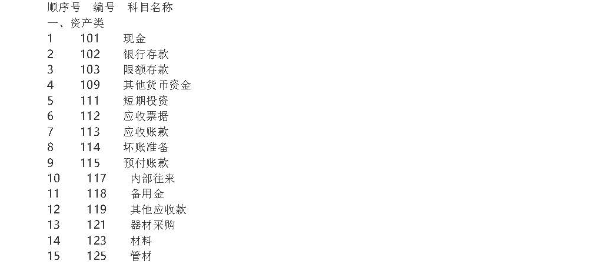
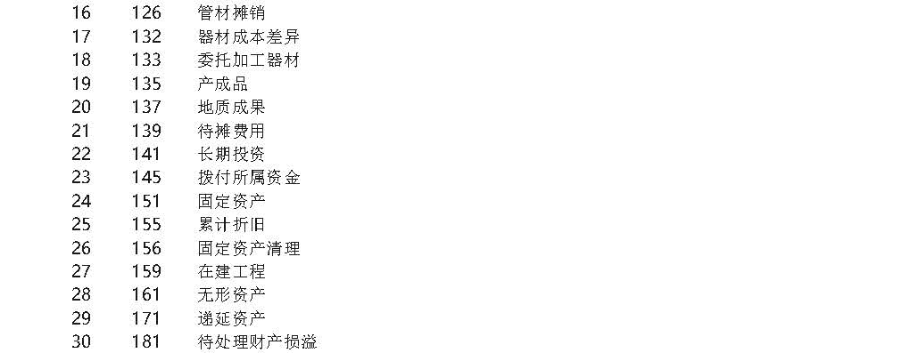
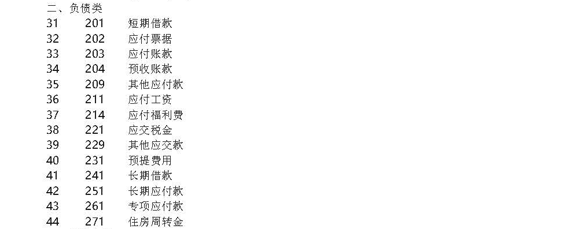
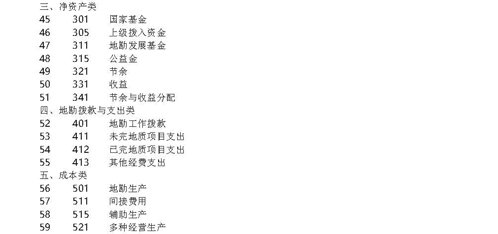
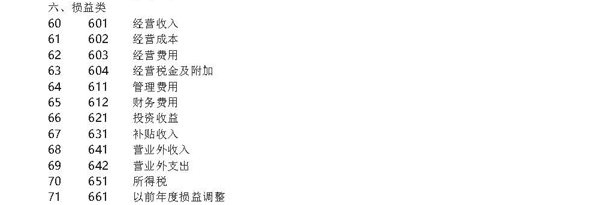

财政部
关于修订印发《地质勘查单位会计制度》的通知
财会字〔1996〕15号
【依据《关于印发〈政府会计制度——行政事业单位会计科目和报表〉的通知》（财会〔2017〕25号），执行《政府会计制度——行政事业单位会计科目和报表》（财会〔2017〕25号）的单位不再执行本制度；依据《关于公布废止和失效的财政规章和规范性文件目录（第十三批）的决定》（财政部令第103号）于2020.01.23废止】
国务院有关主管部门，各省、自治区、直辖市、计划单列市财政厅（局）：
现行《地质勘查单位会计制度》，自1991年1月1日施行以来，先后作了多次修改和补充，修改补充的内容分散于各有关文件，还有一些内容需要根据《企业会计准则》的规定，作进一步修改和补充。为便于地质勘查单位会计人员学习，更好地贯彻执行会计制度，我们对1991年制定的《地质勘查单位会计制度》进行了系统的修订。现将修订的《地质勘查单位会计制度》印发给你们，请转发所属地质勘查单位，自1996年1月1日起执行。
附件：地质勘查单位会计制度
财政部
1996年5月6日
附件：
地质勘查单位会计制度
一、总说明
（一）为了规范地质勘查单位的会计核算，根据《企业会计准则》和国家有关规定，结合地质勘查单位的特点，特制定本制度。
（二）本制度适用于中华人民共和国境内的以地质勘查生产活动为主业的国有地质勘查单位（以下简称地勘单位）。
各级地质勘查行政管理机构，如总局、地区局（厅）、专业（局）院等（以下简称上级主管机构），及其所属行政事业单位，执行行政事业单位统一会计制度。
地勘单位兴办的实行独立核算、自负盈亏并具有法人资格的各类多种经营企业（以下简称多种经营企业），执行相应行业的企业会计制度。
（三）地勘单位应按照本制度的规定，设置和使用会计科目。在不影响会计核算要求和会计报表指标汇总，以及对外提供统一的会计信息的前提下，可以根据实际情况自行增设、减设或合并某些会计科目。
本制度统一规定了会计科目编号，以便于编制会计凭证，登记账簿，查阅账目，实行会计电算化。地勘单位不得随意改变或重编。在某些会计科目之间留有空号，供增设会计科目之用。
地勘单位在填制会计凭证、登记账簿时，应填列会计科目名称，或者同时填列会计科目名称和编号，不得只填会计科目编号，不填会计科目名称。
（四）地勘单位向外报送的会计报表的具体格式和编制说明，由本制度统一规定；地勘单位内部管理需要的会计报表，由地勘单位自行规定。
地勘单位向外报送的会计报表应按规定的编制期间和报送时间，及时编制和报送上级主管机构、财税机关、开户银行和国有资产管理部门。
月份会计报表应于月份终了后15天内报出；年度会计报表应于年度终了后45天内报出。国家另有规定的，从其规定。
会计报表的填列以人民币“元”为金额单位，元以下填至“分”。
向外报送的会计报表应依次编定页数，加具封面，装订成册。封面上应注明：单位名称、地址、建立时间、报表所属年度与月份、报出日期等，并由单位行政领导、总会计师（或代行总会计师职权的人员）和会计主管人员签名或盖章。
地勘单位对外投资如占被投资企业（含所属多种经营企业）资本50%以上或者实质上拥有被投资企业控制权的，应当将其会计报表一并报送。
（五）本制度由中华人民共和国财政部负责解释，需要变更时，由财政部修订。
（六）本制度自1996年1月1日起执行。
二、会计科目
（一）会计科目
|





|
| 注：地勘单位多种经营业务中，如有经营规模较大、收入较多的项目，可参照相应行业企业会计制度，增设有关资产、成本、费用等科目。
|
（二）会计科目使用说明
第101号科目 现金
1.本科目核算地勘单位的库存现金。
地勘单位所属内部核算单位周转使用的备用金，通过“备用金”科目核算。
2.地勘单位收到现金，借记本科目，贷记有关科目，支出现金，借记有关科目，贷记本科目。
3.地勘单位应设置“现金日记账”，由出纳人员根据收、付款凭证，按照业务的发生顺序逐笔登记。每日终了，应计算当日的现金收入合计数、现金支出合计数和结余数，并将结余数与实际库存数核对，做到账款相符。
地勘单位收付的现金，如果有外币现金的，应另行设置“外币现金日记账”，进行明细核算。
第102号科目 银行存款
1.本科目核算地勘单位存入银行和其他金融机构的各种存款。
地勘单位的外埠存款、银行本票存款、银行汇票存款、信用卡存款等在“其他货币资金”科目核算，不在本科目核算。
2.地勘单位收入的一切款项，除国家另有规定的以外，都必须当日解交银行；一切支出，除规定可用现金支付的以外，应按现行有关结算规定，通过银行办理转账结算。
地勘单位将款项存入银行或其他金融机构，借记本科目，贷记“现金”等有关科目；提取或支出存款时，借记“现金”等有关科目，贷记本科目。
3.地勘单位应按开户银行和其他金融机构、存款种类分别设置“银行存款日记账”，根据收、付款凭证，按照业务的发生顺序逐日逐笔登记，并结出账面余额。“银行存款日记账”应与“银行对账单”核对清楚，至少每月核对一次，发现差额，应及时查明更正。月份终了，应编制“银行存款余额调节表”，将银行存款的账面结余与“银行对账单”余额调节相符。如有不符，属于“银行对账单”差错的，应即通知银行查明更正；属于地勘单位记账差错的，应由地勘单位作更正的会计分录或补记入账。
4.地勘单位应指定专人签发银行支票，其他人员一律不得签发支票。银行本票、银行汇票和商业汇票，也应指定专人负责管理。
地勘单位不准出租、出借银行账户；不准签发空头支票和远期支票；不准套取银行信用。
5.有外币存款业务的地勘单位，应在本科目下按照人民币和外币种类分别设置“银行存款日记账”，进行明细核算。
地勘单位发生的外币业务，应当将有关外币金额折合为人民币记账，并登记外国货币金额和折合率。所有外币账户的增加、减少，一律按市场汇价折合为人民币记账。外币金额折合为人民币记账时，可按业务发生时的市场汇价（原则上采用中间价，下同）作为折合率，也可按业务发生当月月初的市场汇价作为折合率。月份（或季度、年度）终了，应将外币存款账户的余额按照期末市场汇价折合为人民币，作为外币存款账户的期末人民币余额。调整后的各外币存款账户期末人民币余额与原账面余额的差额，作为汇兑损益列入财务费用。
外币现金以及外币结算的各项债权、债务，均应比照银行存款的方法记账。
6.地勘单位发生的向银行结汇业务，应按实际收到的人民币金额，借记本科目，按市场汇价折合的人民币金额，贷记“应收账款”等科目，按其差额借记或贷记“财务费用”科目。“应收账款”借贷方差额，期末予以调整。
地勘单位发生的向银行购汇业务，按市场汇价折合的人民币金额，借记有关科目，按实际支付的人民币金额，贷记本科目，按其差额，借记或贷记“财务费用”科目。
第103号科目 限额存款
1.本科目核算地勘单位的地勘工作拨款。
地勘工作拨款采取划拨资金方式的，不使用本科目。
2.地勘单位应设置“限额存款日记账”，根据拨款限额通知单和收款凭证、付款凭证，按照业务的发生顺序逐笔登记。“限额存款日记账”的记录应定期与开户银行核对清楚，一般应每月核对一次，发现差额，应及时查明原因更正。年度终了时，应按规定与开户银行办理年终决算签证手续，并将地勘工作拨款决算签证单呈报上级主管机构。有关银行支票或转账结算凭证的管理，按“银行存款”科目的有关说明办理。
3.地勘单位收到上级主管机构拨入地勘工作拨款限额，借记本科目，贷记“地勘工作拨款——中央预算拨款”科目。退回或年终注销拨款限额时，用红字借记本科目，贷记“地勘工作拨款——中央预算拨款”科目。
按照规定支用拨款限额，借记“银行存款”科目，贷记本科目。
4.本科目期末借方余额，反映地勘工作拨款限额结存数。本科目年终无余额。
第109号科目 其他货币资金
1.本科目核算地勘单位的外埠存款、银行本票存款、银行汇票存款、信用卡存款和在途货币资金等各种其他货币资金。
2.外埠存款是地勘单位到外地进行临时或零星采购时，汇往采购地银行开立采购专户的款项。地勘单位将款项委托当地银行汇往采购地银行开立采购专户时，借记本科目，贷记“银行存款”科目。收到采购员交来供应单位发票账单等报销凭证时，借记“器材采购”等科目，贷记本科目。将多余的外埠存款转回当地银行时，根据银行的收账通知，借记“银行存款”科目，贷记本科目。
3.银行本票存款是地勘单位为取得银行本票按照规定存入银行的款项。地勘单位向银行提交“银行本票申请书”并将款项交存银行，取得银行本票后，根据银行盖章退回的申请书存根联，借记本科目，贷记“银行存款”等科目。付出银行本票后，应根据发票账单等有关凭证，借记“器材采购”等科目，贷记本科目。因本票超过付款期等原因而要求退款时，应填制进账单一式两联，连同本票一并送交银行，再根据银行盖章退回的进账单第一联，借记“银行存款”等科目，贷记本科目。
4.银行汇票存款是地勘单位为了取得银行汇票按照规定存入银行的款项。地勘单位在填送“银行汇票委托书”并将款项交存银行并取得银行汇票后，根据银行盖章退回的委托书存根联，借记本科目，贷记“银行存款”等科目。地勘单位应根据发票账单及开户行转来的银行汇票第四联等有关凭证，经核对无误后，借记“器材采购”等科目，贷记本科目。如有多余款或因汇票超过付款期等原因而退回款项时，借记“银行存款”科目，贷记本科目。
5.信用卡存款是地勘单位为了取得单位信用卡而按规定存入发行信用卡银行开立信用卡备用金专户的款项。地勘单位存入或续存信用卡备用金时，根据发卡银行盖章退回的存款回单，借记本科目（信用卡存款），贷记“银行存款”科目。指定持卡人用以购货时，应根据结算凭证及发票账单，经核对无误后，借记“器材采购”等有关科目，贷记本科目（信用卡存款）。指定持卡人支取现金用于差旅费或零星采购，应及时报账和还清余款，借记“器材采购”、“现金”等科目，贷记本科目（信用卡存款）。支付信用卡年费和异地支款手续费，借记“财务费用”科目，贷记本科目（信用卡存款）或“现金”科目。收到的信用卡存款利息，借记本科目（信用卡存款），贷记“财务费用”科目。因透支而按贷款利率支付的利息，借记“财务费用”科目，贷记本科目（信用卡存款）。销户退回信用卡将结余款转入银行结算账户，借记“银行存款”科目，贷记本科目（信用卡存款）。
6.地勘单位同所属单位之间和上下级之间的汇解款项，在月终时如有未达的汇入款项，应作为在途货币资金处理。根据汇出单位的通知，借记本科目，贷记有关科目。收到款项时，借记“银行存款”科目，贷记本科目。
7.本科目应设置“外埠存款”、“银行本票存款”、“银行汇票存款”、“信用卡存款”、“在途货币资金”等明细科目。
第111号科目 短期投资
1.本科目核算地勘单位购入的能够随时变现、持有时间不超过一年的各种有价证券，以及不超过一年的其他投资，包括各种股票、债券等。
2.地勘单位购入的各种有价证券，按照实际支付的价款，借记本科目，贷记“银行存款”科目。如果实际支付的款项中包含已经宣告发放但尚未支取的股利和利息，应将其作为应收款项处理，按照实际成本（即实际支付的价款扣除已宣告发放的股利和利息），借记本科目，按照应收取的股利和利息，借记“其他应收款”科目，按照实际支付的价款，贷记“银行存款”科目。收到发放的股利和债券利息，借记“银行存款”科目，贷记“投资收益”、“其他应收款”科目。
地勘单位转让、出售有价证券，按照实际收到的金额，借记“银行存款”科目，按照实际成本，贷记本科目，按其差额，借记或贷记“投资收益”科目。
债券到期收回本息，借记“银行存款”科目，贷记本科目和“投资收益”科目。
3.本科目应按短期投资种类设置明细账。
第112号科目 应收票据
1.本科目核算地勘单位因结算社会地质勘查工作价款、对外销售多种经营产品、材料等而收到的商业汇票，包括银行承兑汇票和商业承兑汇票。
2.地勘单位收到应收票据，应按票面金额，借记本科目，贷记“应收账款”、“经营收入”等科目。应收票据到期收回的票面金额，借记“银行存款”科目，贷记本科目。如为带息票据到期，按收到的本息，借记“银行存款”科目，按票面金额，贷记本科目，按其差额，贷记“财务费用”科目。
地勘单位将尚未到期的应收票据向银行贴现，应按实际收到的金额（即扣除贴息后的净额），借记“银行存款”等科目，按贴息部分，借记“财务费用”科目，按应收票据的票面金额，贷记本科目。如应收票据是带息票据，应按实际收到的款项，借记“银行存款”科目，按票面金额，贷记本科目，按其差额部分借记或贷记“财务费用”科目。
贴现的商业承兑汇票到期，因承兑人的银行存款账户不足支付，申请贴现的地勘单位收到银行退回的应收票据和支款通知时，按应收票据票面金额，借记“应收账款”科目，按所付利息，借记“其他应收款”科目，贷记“银行存款”科目。如果申请贴现地勘单位的银行存款账户余额不足，银行作逾期贷款处理时，其不足部分，贷记“短期借款”科目。
地勘单位对出票人进行追索清偿，获得票款及利息时，借记“银行存款”科目，按票面金额，贷记“应收账款”科目，按追索的利息冲减垫付的利息，贷记“其他应收款”科目。如果追索的利息大于垫付的利息，其差额部分冲减财务费用，贷记“财务费用”科目。
3.地勘单位应设置“应收票据登记簿”，逐笔记录每一应收票据的种类、号数和出票日期，票面金额、交易合同和付款人、承兑人、背书人的姓名或单位名称，到期日期和利率，贴现日期、贴现率和贴现净额，以及收款日期和收回金额等资料。应收票据到期收清票款后，应在“应收票据登记簿”内逐笔注销。
4.本科目应按票据种类分别设置明细账。
第113号科目 应收账款
1.本科目核算地勘单位承包社会地质勘查工作应向发包单位收取的结算价款和列入经营收入的其他款项，应收转让地质成果价款，以及销售多种经营产品、材料、提供劳务向购货单位或接受劳务单位收取的款项。地勘单位为购货单位或接受劳务单位代垫的包装费、运杂费，也在本科目核算。
地勘单位预收的款项，包括项目（或工程）款、备料款、购货款等，应在“预收账款”科目核算，不在本科目核算。
2.本科目的借方核算地勘单位应向发包单位、受让单位、购货单位或接受劳务单位收取的结算或销售款项；贷方核算已经收取的款项，以及按照规定从应收账款中扣还的预收款项；本科目的期末余额反映尚未收到的应收账款。
3.地勘单位应收账款如采用商业汇票结算的，收到商业汇票时，应将应收账款自本科目转入“应收票据”科目。
4.经确认为坏账的应收账款，提取坏账准备的地勘单位，借记“坏账准备”科目，贷记本科目；不提取坏账准备的地勘单位，借记“管理费用”科目，贷记本科目。
已确认并转销的坏账损失，如果以后又收回时，提取坏账准备的地勘单位，借记本科目，贷记“坏账准备”科目，同时借记“银行存款”科目，贷记本科目；不提取坏账准备的地勘单位，借记本科目，贷记“管理费用”科目，同时，借记“银行存款”科目，贷记本科目。
5.本科目应分别按发包单位、受让单位和购货单位或接受劳务单位设置明细账。
第114号科目 坏账准备
1.本科目核算地勘单位提取的坏账准备。
不提取坏账准备的地勘单位，不使用本科目。
2.地勘单位根据应收账款的年末余额按规定比例计算应提取的坏账准备。地勘单位当期应提取的坏账准备大于已提取账面余额的，应按其差额提取，借记“管理费用”科目，贷记本科目；应提取的坏账准备小于已提取账面余额的，应按其差额冲减管理费用，借记本科目，贷记“管理费用”科目。
3.发生坏账损失时，借记本科目，贷记“应收账款”科目。
已确认并转销的坏账损失，以后年度又收回的，应按收回的金额，借记“应收账款”科目，贷记本科目；同时，借记“银行存款”科目，贷记“应收账款”科目。
4.本科目期末贷方余额，反映已经提取的坏账准备。
第115号科目 预付账款
1.本科目核算地勘单位按照社会地质勘查工作分包合同规定预付给分包单位的款项，包括预付项目（或工程）款和备料款，以及按照购货合同规定预付给供应单位的购货款。
2.地勘单位预付分包单位项目（或工程）款和备料款时，借记本科目，贷记“银行存款”科目；拨付分包单位抵作备料款的材料，借记本科目，贷记“材料”等科目。地勘单位与分包单位结算已完项目（或工程）价款时，应将已预付的款项扣抵应付价款，借记“应付账款”科目，贷记本科目。
3.地勘单位按规定预付货款时，借记本科目，贷记“银行存款”科目。所购商品、材料验收入库后，根据发票账单的应付金额，借记“器材采购”等科目，贷记“应付账款”科目；同时，应将已预付的货款扣抵应付货款，借记“应付账款”科目，贷记本科目。
4.本科目应按分包单位和供应单位分别设置明细账。
第117号科目 内部往来
1.本科目核算地勘单位与所属内部独立核算单位（包括实行内部独立核算的多种经营单位，下同）之间，或各内部独立核算单位之间，由于项目（或工程）价款结算、产品和材料销售、提供劳务等业务所发生的各种应收、应付、暂收、暂付往来款项。各内部独立核算单位之间的往来款项，可以通过地勘单位集中核算，以便掌握所属内部单位之间的结算情况；也可以由各内部单位直接结算，月终通过集中对账核查，以简化核算手续。
2.下列各项结算业务不在本科目核算：
（1）地勘单位与内部独立核算单位之间有关生产资金的下拨、上交，应在“拨付所属资金”和“上级拨入资金”科目核算。
（2）地勘单位拨给内部非独立核算单位的周转金，应在“备用金”科目核算。
3.本科目应按各内部独立核算单位设置明细账，进行明细核算。地勘单位与所属内部独立核算单位之间、各所属内部独立核算单位之间对本科目的记录应相互一致。
为了确保地勘单位与各内部独立核算单位之间往来款项的记录相一致，应使用“内部往来列账通知单”（格式、内容由地勘单位自行规定），由经济业务发生单位填制，送交对方及时记账，并由对方核对后，及时将副联退回。每月终了，由规定的一方根据明细账记录抄列内部往来清单，送交对方核对账目；对方应及时核对并将一份清单签回发出单位。如有未达账项或由于差错等原因核对不符的，应在签回的清单上详细注明。发出单位对于对方指出的差错项目，应及时查明并作调整分录。
第118号科目 备用金
1.本科目核算地勘单位拨给内部非独立核算单位（如职能部门、分队或工区、车间等，下同）和个人备作野外生活必需品储备、差旅费、零星采购或零星开支等使用的款项。
2.备用金应指定专人负责管理，按照规定用途使用，不得转借给他人或挪作他用。支用的备用金，应在规定期限内办理报销手续，交回余款。前账未清，不得继续拨付。
对使用备用金比较频繁的单位，也可以实行定额备用金制度，指定专人管理，年度终了时，应全额退回财会部门。
3.实行定额备用金制度的单位，领用单位支用备用金后，应根据各种费用凭证编制“费用明细表”，定期向财会部门报销，领回所支用的备用金。财会部门根据“费用明细表”将支用数直接记入有关成本、费用科目，并给领用单位补足备用金。除增加或减少备用金定额外，都不通过本科目核算。
4.本科目的借方核算地勘单位向各领用单位和领用人拨付的备用金；贷方核算地勘单位向各领用单位和领用人收回的备用金；期末借方余额反映各领用单位和领用人占用的备用金。
5.本科目应按备用金领用单位和领用人设置明细账。
第119号科目 其他应收款
1.本科目核算地勘单位除应收票据、应收账款、预付账款、内部往来和备用金等应收款项以外的其他各种应收、暂付款项，包括各种赔款、罚款、存出保证金、应向职工收取的各种垫付款项等。
2.地勘单位发生其他各种应收款项时，借记本科目，贷记有关科目；收回各种款项时，借记有关科目，贷记本科目。
3.本科目应按其他应收款的项目分类，并按不同的债务人设置明细账。
第121号科目 器材采购
1.本科目核算地勘单位购入材料、管材等物资的实际采购成本。发包单位拨入抵作备料款的材料，也在本科目核算。
2.购入材料、管材的采购成本包括：
（1）买价；
（2）运杂费，包括运输费、装卸费，保险费、包装费、仓储费等；
（3）运输途中的合理损耗；
（4）入库前的整理、挑选、加工费用，包括整理、挑选、加工中发生的人工费、物料消耗（扣除回收的下脚残料价值）和必要的损耗；
（5）购入材料、管材应负担的税金。
其中（1）、（3）、（5）项应直接计入材料、管材的采购成本；（2）、（4）项能分清负担对象的，直接计入有关材料、管材的采购成本，不能分清负担对象的，按材料、管材的重量或买价的比例等分摊标准，分摊计入各有关材料、管材的采购成本。
3.购入材料、管材在途中的短缺和损耗，应查明原因及时处理。合理损耗（定额内损耗）计入有关材料、管材的采购成本；能够确定应由供应单位、运输单位、保险公司或其他过失人负责赔偿的损失，应根据有关索赔凭证，借记“应付账款”、“其他应收款”科目，贷记本科目；因遭受意外灾害发生的损失和留待查明原因的损失，应先转入“待处理财产损溢”科目，查明原因并按规定程序报经批准后，再作相应的账务处理。
4.本科目的借方核算地勘单位外购材料、管材支付的价款，发生的运杂费、税金，以及发包单位拨入抵作备料款的材料、管材价款；贷方核算已经付款或已开出、承兑商业汇票并已验收入库的材料、管材的实际采购成本，以及应向供应单位、运输单位等收回的材料、管材短缺或其他应冲减采购成本的赔偿款项；期末借方余额，反映已付款或已开出、承兑商业汇票但尚未到达或尚未验收入库的在途材料、管材。
5.对于尚未付款或尚未开出、承兑商业汇票但已验收入库的购入材料、管材，应于月份终了按计划成本暂估入账，借记“材料”、“管材”等科目，贷记“应付账款——暂估应付账款”科目，下月初用红字作相同记录予以冲回，待下月付款或开出、承兑商业汇票后，再按正常程序记账，借记本科目，贷记有关科目。
6.采用计划成本进行材料、管材核算的地勘单位，在结转已验收入库的材料、管材实际采购成本时，应同时将实际成本与计划成本的差额转入“器材成本差异”科目；其中旧管材的实际成本与计划成本的差额转入“管材摊销”科目。
7.材料、管材的日常核算，可以采用计划成本，也可以采用实际成本，具体采用哪一种方法，由地勘单位根据实际情况自行确定。
采用计划成本进行日常核算的地勘单位，计划单位成本除有特殊情况可随时调整外，在年度内一般不作变动。采用实际成本进行日常核算的企业，可以不设置本科目和“器材成本差异”科目，另外设置“在途器材”科目。对在途器材，无论采用计划成本或实际成本核算，均应设置备查簿进行详细登记。
8.本科目应按材料、管材种类设置明细账，进行明细核算。
第123号科目 材料
1.本科目核算地勘单位各种库存材料的计划成本或实际成本。
地勘单位库存的管材，在“管材”科目核算，不在本科目核算。
2.本科目的借方核算外购、自制、委托外单位加工完成、发包单位转账拨入、盘盈等原因增加的材料计划成本或实际成本；贷方核算领用、发出加工、对外销售以及盘亏、毁损等原因减少的材料计划成本或实际成本；期末借方余额反映库存的材料计划成本或实际成本。
采用实际成本进行材料日常核算的地勘单位，对于发出的材料，可根据情况选择使用“先进先出法”、“加权平均法”、“后进先出法”等方法计价。对不同的材料可以采用不同的计价方法。材料计价方法一经确定，不能随意变更，如有变更，应在年度财务报告中加以说明。
采用计划成本进行材料日常核算的地勘单位，对于发出的材料，应按月结算其成本差异，将计划成本调整为实际成本。
3.本科目应按材料的类别、品种、规格和保管地点设置明细账。
4.对材料的分类，上级主管机构有统一规定的，按照统一规定进行分类；没有统一规定的，地勘单位可根据实际情况自行确定分类。
第125号科目 管材
1.本科目核算地勘单位库存和在用的各种地质勘查专用管材（包括钻杆、套管、金属水管、油管和风管等）的计划成本或实际成本。
2.地勘单位的管材按其使用状态可分为两类：
（1）在库管材，指验收入库后尚未投入使用的各种管材。
（2）在用管材，指在生产单位周转使用的管材。
3.本科目应设置“在库管材”、“在用管材”两个明细科目，并分别按管材品名、规格设置明细账。
为了便于掌握和监督使用单位占用各种管材的增减变动情况，计算、分配管材摊销费用，还应按使用单位设置“在用管材管理卡片”，根据有关凭证逐项登记管材的领用、退库、报废和使用单位之间转移等情况，并应与在用管材明细账保持一致。
4.本科目的“在库管材”明细科目借方核算外购、自制和委托加工完成、发包单位转账转入以及盘盈等原因增加的管材计划成本或实际成本；贷方核算发出加工、对外销售、盘亏等原因减少的管材计划成本或实际成本；本科目“在用管材”明细科目借方核算领用的管材，贷方核算报废、毁损的管材；期末借方余额反映在库管材和在用管材的计划成本或实际成本。
5.采用计划成本进行管材日常核算的地勘单位，领用在库新管材时，按计划成本由“管材——在库管材”科目转入“管材——在用管材”科目，同时将其应分摊的管材成本差异计入使用单位生产成本。
采用实际成本进行管材日常核算的地勘单位，领用在库新管材时，可采用“加权平均法”、“移动平均法”、“个别计价法”等方法计价，按实际成本由“管材——在库管材”科目转入“管材——在用管材”科目。
6.在用管材的领用、退回、送修以及在使用单位之间转移时，可只在“在用管材管理卡片”上作辅助登记，不作账务处理。
7.在库管材进行丝扣加工的费用，直接计入在库管材成本。在用管材的修理费用，直接计入使用单位生产成本。在用管材在修理中发生的合理损耗，可视同正常使用磨损报废处理。
8.在用管材在使用中发生报废时，应查明原因，分清责任，对可回收的废管材，要清点入库并估算其残值。
因正常使用磨损至不能修复而报废的，按入库残料价值，借记“材料”科目；按已提摊销额（计划成本或实际成本扣减入库残料价值）借记“管材摊销”科目；按计划成本或实际成本，贷记本科目。
因孔内事故不能起出或其他责任事故而报废的，按已提摊销额，借记“管材摊销”科目；按应收过失人的赔偿款，借记“其他应收款”科目；按入库残料价值，借记“材料”科目；按应补提摊销额计入使用单位成本，借记“地勘生产”科目；按计划成本或实际成本，贷记本科目。
第126号科目 管材摊销
1.本科目核算地勘单位在用管材的累计耗损价值。
2.地勘单位可根据使用管材的具体情况，采取下列不同的摊销方法：
（1）一次摊销：一般应限于下入钻井内不再起出的管材（如石油钻井用于固井的套管等），根据实际耗用管材的价值一次计入生产成本。
（2）定额摊销：一般应限于钻杆，根据实际完成工作量、开动台班和规定的摊销定额，计算本期摊销额。
（3）分期摊销：根据各种管材的预计使用期限，分期摊入生产成本。
3.本科目可不设置明细科目。为便于查阅各种在用管材的已提摊销额情况，可在“在用管材明细账”上设置“已提摊销额”专栏，逐月根据“管材摊销计算、分配表”进行登记，综合反映各种在用管材的计划成本或实际成本、已提摊销额和摊余价值情况。
4.本科目借方核算在用管材因报废、盘亏、毁损以及对外销售等原因而冲减的摊销额；贷方核算在用管材因购入、使用以及盘盈等原因而增加和计提的摊销额；期末贷方余额反映全部在用管材的累计耗损价值。
5.采用一次摊销方法的管材，应根据领用管材的净值计算其应摊销额，一次计入生产成本。
领用的在库管材比照领用材料进行账务处理；领用的在用管材，在分摊应计入生产成本的管材摊销额的同时，按计划成本或实际成本，借记本科目，贷记“管材——在用管材”科目。
采用其他摊销方法的管材，应在月终计算、分摊本期管材摊销额，借记有关成本费用科目，贷记本科目。
6.年终清查管材时，应对在用管材的磨损程度进行鉴定，并与账面数进行核对。如出入较大时，应进行调整，调整增加的摊销额，借记有关成本费用科目，贷记本科目；调整减少的摊销额，用红字编制相同分录，冲减有关成本费用。
第132号科目 器材成本差异
1.本科目核算地勘单位各种材料和在库管材的实际成本与计划成本的差异。
采用计划成本进行材料、管材日常核算的地勘单位，应制定材料、管材价格目录，列出各种材料、管材的名称、规格、编号和计划单位成本。计划单位成本除有特殊原因可及时调整外，在年度内一般不作变动。
2.购入、发包单位拨入抵作备料款、自制及委托加工完成材料的成本差异，应分别自“器材采购”、“辅助生产”和“委托加工器材”科目转入本科目，实际成本大于计划成本的差异，记入本科目借方；实际成本小于计划成本的差异，记入本科目贷方。库存材料因调整计划成本所发生的差额，应自“材料”科目转入本科目。调整减少计划成本的数额，记入本科目的借方；调整增加计划成本的数额，记入本科目的贷方。
3.领用、发出或报废的各种材料应负担的成本差异，应自本科目转入有关成本费用科目借记“地勘生产”、“间接费用”、“辅助生产”等科目，贷记本科目。实际成本大于计划成本的差异，用蓝字登记，实际成本小于计划成本的差异，用红字登记。
4.发出材料应负担的成本差异，可按当月材料成本差异率计算，也可按上月差异率计算。
计算、分配成本差异的方法一经确定，不得随意变更。如有变更，应在年度财务报告中加以说明。
当月材料成本差异率=(月初结存材料成本差异+本月收入材料成本差异)÷(月初结存材料计划成本+本月收入材料计划成本)×100%
上月成本差异率=月初结存材料成本差异÷月初结存材料计划成本×100%
5.在库管材的实际成本与计划成本的差异，可比照上述材料成本差异核算方法处理。
6.本科目的借方核算各种入库材料、在库管材的实际成本大于计划成本的差异；贷方核算各种入库材料、在库管材实际成本小于计划成本的差异及分摊发出材料、在库管材应负担的成本差异；期末借方余额反映各种库存材料、在库管材实际成本大于计划成本的差异，贷方余额反映实际成本小于计划成本的差异。
7.本科目应按材料、管材进行明细核算。
第133号科目 委托加工器材
1.本科目核算地勘单位委托外单位加工的各种材料、管材的实际成本。
2.委托加工材料、管材的实际成本，一般包括：
（1）加工中耗用材料的实际成本；
（2）支付的加工费用；
（3）支付加工材料、管材往返运杂费。
采用计划成本进行日常核算的地勘单位，委托外单位加工的材料、管材，应同时结转其应负担的成本差异。
3.本科目的借方核算发送外单位加工的材料、管材的实际成本和发生的加工费用及往返运杂费；贷方核算加工完成并已验收入库的材料、管材的实际成本和退回材料、管材的实际成本；
期末借方余额反映委托加工但尚未完成或尚未验收入库的材料、管材的实际成本以及发生的运杂费及加工费。
4.本科目应按加工合同和受托加工单位设置明细账，记录发出材料、管材的名称、数量、实际成本（或计划成本和成本差异），发生的加工费和运杂费，退回材料、管材的实际成本，以及加工完成的材料、管材的实际成本等资料。
第135号科目 产成品
1.本科目核算地勘单位及所属内部独立核算单位库存的各种产成品（包括回收的矿产品，下同）的实际成本。
地勘单位及所属内部独立核算单位接受外单位来料加工制造的代制品和为外单位加工修理的代修品，在制造修理完成，验收入库后，视同产成品，一并在本科目核算。制造或修理完成后，直接发交委托单位的代制品和代修品，可由“辅助生产”、“多种经营生产”科目直接转入“经营成本——多种经营成本”科目，不通过本科目核算。
2.本科目的借方核算已经完成生产过程并已验收入库以及盘盈的产成品的实际成本；贷方核算售出产成品的实际成本以及转为待处理财产的盘亏、毁损产成品的实际成本；期末借方余额，反映库存产成品的实际成本。
3.地勘单位自用的产成品，如税法规定需要缴纳税金的，应视同产品销售处理；不需要缴纳税金的，可将其实际成本自本科目直接转入有关科目，不作销售处理。
4.本科目应按产成品种类、名称、规格和存放地点设置明细账。
5.采用赊销、分期收款结算方式销售产品，并按合同约定的收款日期确定销售收入实现的企业，可增设“分期收款发出商品”科目。产成品发出或办妥赊销、分期收款销售合同（手续）后，将赊销或分期收款的产成品实际成本，从本科目转入“分期收款发出商品”科目。按合同规定期限收取销售价款时，借记“银行存款”或“应收账款”科目，贷记“经营收入——多种经营收入”科目，并按当期收回的价款占应收价款总额的比例计算结转已销售实现的产成品的销售成本，借记“经营成本——多种经营成本”科目，贷记“分期收款发出商品”科目。
第137号科目 地质成果
1.本科目核算地勘单位取得的用于市场交换的地质成果的实际成本。包括使用自筹资金、黄金等专项地质勘查资金贷款进行地质勘查工作取得的地质成果。
地勘单位报经批准用国家地质成果对外投资和转让，也通过本科目核算。
地勘单位承包社会其他委托单位的各种地质勘查工程，不通过本科目核算。
2.地勘单位在地质勘查生产过程中所发生的各项成本费用，应先在“地勘生产”科目进行归集，地质项目完成验收并将取得的地质成果作为资产入账时，按其实际成本，借记本科目，贷记“地勘生产”科目。
对外转让自有地质成果，结转其实际成本时，借记“经营成本——地质成果转让成本”科目，贷记本科目。
地勘单位用自有地质成果对外投资时，按评估确认价值或协议价，借记“长期投资”科目；按账面价值，贷记本科目；评估确认价值或协议价与账面价值的差额，借记或贷记“地勘发展基金”科目。
3.地勘单位报经批准，对外转让国家地质成果时，如转让收入大于实际成本的，按实现的转让收入，借记本科目，按实际成本，贷记“国家基金”科目，按实现的转让收入减去实际成本的净收入，贷记“经营收入——地质成果转让收入”科目；同时，借记“银行存款”、“应收账款”科目，贷记本科目。如实现的转让收入小于或等于实际成本的，按实际的转让收入，借记本科目，贷记“国家基金”科目；同时，借记“银行存款”、“应收账款”科目，贷记本科目。
地勘单位报经批准，用国家地质成果对外投资时，按评估确认的价值或协议价，借记本科目贷记“国家基金”科目；同时，借记“长期投资”科目，贷记本科目。
4.本科目应按每项地质成果设置明细科目。
5.本科目期末借方余额，反映已取得但尚未转让和尚未结算的地质成果的实际成本。
第139号科目 待摊费用
1.本科目核算地勘单位已经支出但应由本期和以后各期分别负担的分摊期在一年以内的各项费用，如野外施工前的准备工作费用，一次领用数额较大的工具器具，一次支付数额较大的财产保险费、排污费、技术转让费、固定资产租金和修理费，集中发放的劳动保护用品费，集中购入冬季取暖燃料、炉具等。
2.地勘单位发生各项待摊费用时，借记本科目，贷记“银行存款”、“材料”等科目。各项待摊费用分期摊销时，借记有关成本费用等科目，贷记本科目。
3.本科目应按照待摊费用种类进行明细核算。
第141号科目 长期投资
1.本科目核算地勘单位不准备在一年内变现的投资，包括股票投资、债券投资、地质成果投资和其他投资。
地勘单位以各种方式向独立核算、自负盈亏并具有法人资格的多种经营企业投资，也在本科目核算。
2.债券投资应按投资时实际取得成本入账。
股票投资和其他投资应根据不同情况，分别采用成本法或权益法核算。
3.本科目应设置以下四个明细科目：
（1）股票投资；
（2）债券投资；
（3）其他投资；
（4）应计利息。
4.地勘单位进行股票投资时，按实际支付的价款（包括取得成本和经纪人佣金、手续费等附加费用），借记本科目（股票投资），贷记“银行存款”等科目。实际支付的价款中如含有已宣告发放的股利，应按购买股票的实际成本（按实际支付的价款扣除已宣告发放的股利），借记本科目（股票投资），按应收的股利，借记“其他应收款——应收股利”科目，按实际支付的价款，贷记“银行存款”等科目。
股票投资采用成本法核算的，收到发放的股利时，借记“银行存款”等科目，贷记“投资收益”科目；对于收到购买股票时已入账的应收股利，还应贷记“其他应收款——应收股利”科目。
采用权益法核算的，应根据接受投资企业所有者权益的增加，按持股比例计算本单位所拥有的权益的增加额，借记本科目（股票投资），贷记“投资收益”科目。接受投资企业的所有者权益减少，作相反分录。分得的股利，借记“银行存款”等科目，贷记本科目（股票投资）。
5.地勘单位进行债券投资时，按实际支付的价款，借记本科目（债券投资），贷记“银行存款”科目。如果实际支付的价款中含有应计的利息，还应将这部分利息，借记本科目（应计利息）。
地勘单位应于会计期间终了时，计算本期应计未收利息，按面值购入的债券应计未收利息，借记本科目（应计利息），贷记“投资收益”科目。按溢价或折价购入的债券，其溢价或折价应当在债券存续期间内分期平均分摊，即于各会计期间终了时，按当期应计利息，借记本科目（应计利息）；按当期应分摊的溢价或折价金额，贷记或借记本科目（债券投资）；按当期应计利息与应分摊的溢价或折价数之差额，贷记“投资收益”科目。
债券到期收回本息时，按本息合计数，借记“银行存款”等科目，按本金数，贷记本科目（债券投资），按已计利息数，贷记本科目（应计利息），按未计利息数，贷记“投资收益”科目。
6.地勘单位以现金、实物、无形资产等（不包括地质成果）向其他单位或多种经营企业投资时，应按实际支付的款项或评估确认的价值，借记本科目（其他投资），按实际支付的金额或投出资产的账面金额，贷记“银行存款”、“材料”、“管材”、“固定资产”、“无形资产”等科目；评估确认的价值与账面价值的差额，借记或贷记“地勘发展基金”科目；以使用过的固定资产投资的，还应按其已提折旧，借记“累计折旧”科目。
地勘单位以自有地质成果向其他单位或多种经营企业投资时，应按评估确认的价值或协议价，借记本科目（其他投资），按账面价值，贷记“地质成果”科目，按评估确认的价值或协议价与账面价值的差额，借记或贷记“地勘发展基金”科目。
向其他单位或兴办的多种经营企业投资分得的收益，采用成本法核算的，借记“银行存款”等科目，贷记“投资收益”科目；采用权益法核算的，比照股票投资进行会计处理。
收回向其他单位或多种经营企业的投资，借记“固定资产”、“银行存款”等科目，贷记本科目（其他投资）和“累计折旧”科目，收回数与账面数的差额，借记或贷记“投资收益”科目。
7.地勘单位报经批准，以国家地质成果向其他单位或多种经营企业投资时，应按评估确认的价值或协议价，借记“地质成果”科目，贷记“国家基金”科目；同时，借记本科目（其他投资），贷记“地质成果”科目。
分得的投资收益，采用成本法核算的，借记“银行存款”科目，贷记“投资收益”科目；采用权益法核算的，比照股票投资进行会计处理。
收回本金时，按收回数，借记“银行存款”等科目，按账面数，贷记本科目（其他投资），按收回数与账面数的差额，借记或贷记“国家基金”科目。
8.地勘单位对外转让股票或债券，应按实际收到的金额，借记“银行存款”等科目，按该项投资的账面金额，贷记本科目（股票投资或债券投资），按应收股利或应计未收利息，贷记“其他应收款”科目（应收股利）或本科目（应计利息），按借贷方差额，借记或贷记“投资收益”科目。转让中发生的各项附加费用，应抵减转让收入。
9.本科目应按股票、债券种类和被投资单位、多种经营企业设置明细账。
第145号科目 拨付所属资金
1.本科目核算地勘单位拨付所属内部独立核算单位的生产资金。
地勘单位与所属内部独立核算单位之间因购销或其他业务而发生的债权债务和收付款项等，应在“内部往来”科目核算，不在本科目和“上级拨入资金”科目核算。
2.地勘单位拨出的固定资产，按账面净值，借记本科目，按已提折旧，借记“累计折旧”科目，按账面原值贷记“固定资产”科目；拨出的流动资产，按账面价值或实拨数，借记本科目，贷记“材料”、“管材”、“器材成本差异”、“银行存款”等科目。收到所属内部独立核算单位上交的固定资产、流动资产时，作相反分录。
3.本科目的核算内容，应与所属单位使用的“上级拨入资金”科目的核算内容相一致。
4.本科目应按各内部独立核算单位分别设置明细账，进行明细核算。
第151号科目 固定资产
1.本科目核算地勘单位固定资产的原价。
地勘单位应按规定的固定资产标准和上级主管机构制定的固定资产目录，作为核算依据。
2.地勘单位的固定资产应按下列规定，确定其入账原价：
（1）购入的固定资产，为实际支付的全部价款，包括买价或售出单位原价（扣除原安装成本）、支付的包装费、运杂费、安装成本以及缴纳的税金；
（2）自行建造的固定资产，为建造过程中实际发生的全部支出；
（3）融资租入的固定资产，为租赁协议确定的价款，加上支付的运杂费、途中保险费、安装调试费等；
（4）在原有基础上进行改建、扩建的固定资产，为原固定资产账面原价，减去改建、扩建过程中发生的变价收入，加上由于改建、扩建而增加的支出；
（5）接受捐赠的固定资产，按受赠固定资产的市场价格或评估确认的价值，或根据捐赠者提供的有关凭据确定其价值。接受捐赠固定资产所发生的各项费用，计入固定资产价值；
（6）盘盈的固定资产，为同类固定资产重置完全价值；
（7）因机构调整、变更隶属关系由其他单位无偿调入的不需要安装的固定资产，为调出单位的账面原价；需要安装的固定资产，为原账面原价扣除原安装成本，再加上新安装成本、包装费、运杂费等作为调入固定资产的原价。
地勘单位为取得固定资产发生的借款利息支出和其他有关费用，以及外币借款的折合差额，在固定资产尚未交付使用或已投入使用但尚未办理竣工决算前发生的，应计入固定资产价值。在此以后发生的，计入当期损益。
已投入使用但尚未办理移交手续的固定资产，可按估计价值入账，待确定实际价值后，再进行调整。
地勘单位购建固定资产交纳的固定资产投资方向调节税、耕地占用税，计入固定资产价值。
3.已经入账的固定资产，除发生下列情况外，不得任意变动其账面价值：
（1）根据国家规定对固定资产重新估价；
（2）增加补充设备或改良装置；
（3）将固定资产的一部分拆除；
（4）根据实际价值调整原来的暂估价值；
（5）发现原记固定资产价值有错误。
4.购入不需要安装的固定资产，借记本科目，贷记“银行存款”等科目；购入需要安装的固定资产，先记入“在建工程”科目，安装完毕交付使用时再转入本科目。
自行建造完成的固定资产，借记本科目，贷记“在建工程”科目。
融资租入的固定资产，应单设明细科目进行核算。交付使用时，借记本科目，贷记“在建工程”、“长期应付款”等科目。租赁期满，如合同规定将设备所有权转归地勘单位，应将固定资产从“融资租入固定资产”明细科目转入有关明细科目。
接受捐赠的固定资产，借记本科目，贷记“地勘发展基金”、“累计折旧”科目。
盘盈的固定资产，按重置完全价值，借记本科目，按估计折旧，贷记“累计折旧”科目，按净值，贷记“待处理财产损溢”科目。
5.地勘单位因出售、报废和毁损等原因减少的固定资产，应按减少的固定资产净值，借记“固定资产清理”科目，按已提折旧，借记“累计折旧”科目，按固定资产原价，贷记本科目。
投资转出的固定资产，借记“长期投资”、“累计折旧”科目，贷记本科目。
盘亏的固定资产，按其净值，借记“待处理财产损溢”科目，按已提折旧，借记“累计折旧”科目，按固定资产原价，贷记本科目。
6.地勘单位因机构调整、变更隶属关系，由其他单位无偿调入不需要安装的固定资产，应按调出单位的转账数，借记本科目，贷记“累计折旧”、“国家基金”科目。无偿调入需要安装的固定资产，按调入固定资产的净值（即原价减已提折旧，下同）以及发生的包装费、运杂费等，借记“在建工程”科目，按调入固定资产的净值，贷记“国家基金”科目，按发生的支出，贷记“银行存款”等科目。发生的安装费用，借记“在建工程”科目，贷记“银行存款”、“应付工资”等科目。工程完工交付使用，按调出单位的账面原价加上新安装成本以及包装费等，借记“固定资产”科目，按在建工程的实际成本，贷记“在建工程”科目，按其差额，贷记“累计折旧”科目。
地勘单位因机构调整、变更隶属关系，无偿调出的固定资产，应按净值，借记“国家基金”科目，按已提折旧，借记“累计折旧”科目，按账面原价，贷记本科目。
7.地勘单位应设置“固定资产明细账”和“固定资产卡片”，对固定资产进行明细核算。
固定资产明细账可按固定资产类别设户，按保管、使用单位设专栏，只进行价值核算。固定资产卡片应按单项固定资产设置，按类别和保管、使用单位顺序排列保管，并与明细账保持一致。
8.临时租入的固定资产，应另设备查簿进行登记，不在本科目核算。
第155号科目 累计折旧
1.本科目核算地勘单位固定资产的累计折旧。
2.地勘单位按月计提固定资产折旧时，借记有关成本费用科目，贷记本科目。
3.固定资产提足折旧后，不管能否继续使用，均不再提取折旧；提前报废的固定资产，也不再补提折旧。所谓提足折旧，是指已经提足该项固定资产应提的折旧总额。应提的折旧总额为固定资产原价减去预计残值加上预计清理费用。
4.本科目只进行总分类核算，不进行明细分类核算。需要查明某项固定资产的已提折旧时，可以根据固定资产卡片上所记载的该项固定资产原价、折旧率和实际使用年数等资料进行计算。
第156号科目 固定资产清理
1.本科目核算地勘单位因出售、报废、毁损等原因转入清理的固定资产净值以及发生的清理费用和清理收入。
2.出售、报废和毁损的固定资产转入清理时，应按固定资产净值，借记本科目；按已提折旧，借记“累计折旧”科目；按固定资产原价，贷记“固定资产”科目。
清理过程中发生的费用，借记本科目，贷记“银行存款”等科目；收回出售固定资产的价款、残料价值和变价收入等，借记“银行存款”、“材料”等科目，贷记本科目；应由保险公司或过失人赔偿的损失，借记“其他应收款”、“银行存款”等科目，贷记本科目。
固定资产清理后的净收益，借记本科目，贷记“营业外收入——处理固定资产收益”科目。
固定资产清理后的净损失，区别情况处理：属于自然灾害等非常原因造成的损失，报经批准后，用于国家预算内地勘工作的固定资产，借记“国家基金”科目，贷记本科目；用于其他经营的固定资产，借记“营业外支出——非常损失”科目，贷记本科目；属于正常的处理损失，借记“营业外支出——处理固定资产损失”科目，贷记本科目。
3.本科目应按被清理的固定资产设置明细账，进行明细核算。
第159号科目 在建工程
1.本科目核算地勘单位进行各种固定资产工程，包括自行建造固定资产工程、固定资产改建扩建工程、固定资产修理工程、购入或无偿调入需要安装设备的安装工程等所发生的实际支出。
地勘单位购入不需要安装的固定资产，不在本科目核算。
地勘单位外购的专门用于各项工程的物资，应在本科目单独设置“工程物资”明细科目进行核算。
2.地勘单位购入各项工程使用的材料物资，借记本科目，贷记“银行存款”等科目。
各项工程领用材料物资，借记本科目（XX工程），贷记本科目（工程物资）、“材料”等科目。
应负担的职工工资，借记本科目，贷记“应付工资”科目。使用所属内部独立核算单位的产品，按规定以售价结算的，借记本科目，贷记“经营收入”等科目。辅助生产等部门为各项工程提供的水、电、设备安装、修理和运输等劳务，应按月根据实际成本，借记本科目，贷记“辅助生产”等科目。各项工程发生的其他支出，借记本科目，贷记“银行存款”、“长期借款”等科目。
出包给外单位施工的工程，按合同规定预付的工程款，借记“预付账款”科目，贷记“银行存款”科目；工程完工与承包单位进行工程价款结算，按应付的工程款，借记本科目，贷记“应付账款”科目；结转预付的工程款，借记“应付账款”科目，贷记“预付账款”科目；补付的工程款，借记“应付账款”科目，贷记“银行存款”科目。
3.地勘单位发生的工程借款利息，应区别情况分别处理：工程尚未交付使用或虽已交付使用但尚未办理竣工决算前发生的借款利息，计入在建工程成本，即借记本科目，贷记“长期借款”等科目；办理竣工决算后发生的借款利息，计入财务费用，即借记“财务费用”科目，贷记“长期借款”等科目。
用外币借款进行的工程，因外币折合率变动而发生的汇兑损失，在工程尚未完工交付使用或虽已交付使用但尚未办理竣工决算前发生的，计入在建工程成本，即借记本科目，贷记“长期借款”等科目；办理竣工决算后发生的，计入财务费用，即借记“财务费用”科目，贷记“长期借款”等科目。因外币折合率变动而发生的汇兑收益，作相反分录。
4.地勘单位在建工程在试运转过程中所取得的收入扣除税金后，冲减在建工程成本。
5.各项工程完工交付使用时，按工程的实际成本，借记“固定资产”科目，贷记本科目。
6.本科目应按工程项目和工程物资设置明细账。
7.本科目期末借方余额，反映尚未完工或虽已完工交付使用但尚未办理竣工决算的工程实际成本及购入尚未使用的工程物资的实际成本。
第161号科目 无形资产
1.本科目核算地勘单位的专利权、非专利技术、商标权、著作权、土地使用权等各种无形资产的价值。
2.地勘单位购入或自行开发并按法律程序申请取得的各种无形资产，应按实际支出，借记本科目，贷记“银行存款”等科目。
地勘单位用已入账的无形资产对外投资，按评估确认的价值或协议价，借记“长期投资”科目，按账面价值，贷记本科目，按评估确认的价值或协议价与账面价值的差额，借记或贷记“地勘发展基金”科目。
地勘单位转让已入账的无形资产，按其转让收入，借记“银行存款”等科目，贷记“经营收入——多种经营收入”科目；结转转让无形资产的成本，借记“经营成本——多种经营成本”科目，贷记本科目。
地勘单位各种无形资产应按有效使用期分期平均摊销。摊销时，借记“管理费用”科目，贷记本科目。
3.本科目应按无形资产类别设置明细账。
4.本科目期末借方余额，反映尚未摊销的无形资产价值。
第171号科目 递延资产
1.本科目核算地勘单位发生的不能全部计入当年损益，应在以后年度内分期摊销的各项费用，如内部独立核算多种经营单位筹建期间的开办费、租入的固定资产改良工程支出以及摊销期限在一年以上的固定资产修理支出和其他待摊费用等。
2.地勘单位发生的各项递延费用，借记本科目，贷记“银行存款”等科目。
各项递延费用均应分期平均摊销，其中多种经营单位的开办费应在开始生产经营以后的一定年限内分期平均摊销；固定资产修理支出，应在修理间隔期间分期平均摊销；租入固定资产改良工程支出，应在租赁期内分期平均摊销；其他递延费用，应在费用项目的受益期限内分期平均摊销。摊销时，借记“地勘生产”、“多种经营生产”、“管理费用”等科目，贷记本科目。
3.本科目应按递延资产的种类设置明细账。
第181号科目 待处理财产损溢
1.本科目核算地勘单位在清查财产过程中查明的各种财产物资的盘盈、盘亏和毁损。
2.盘盈的各种材料、管材、库存产品、固定资产等，借记“材料”、“管材”、“产成品”“固定资产”等科目，贷记本科目和“管材摊销”、“累计折旧”等科目。
盘亏、毁损的各种材料、管材、库存产品、固定资产等，借记本科目和“管材摊销”、“累计折旧”等科目，贷记“材料”、“管材”、“器材成本差异”、“产成品”、“固定资产”等科目。
3.各种盘盈、盘亏和毁损的财产物资，按照规定程序经批准转销时，对盘亏、毁损的财产物资，应先扣除残料价值和可收回的保险赔偿及过失人赔偿，即借记“材料”、“其他应收款”等科目，贷记本科目；再按照扣除后的净损失转销：
流动资产的盘盈，借记本科目，贷记“管理费用”科目；
固定资产的盘盈，借记本科目，贷记“营业外收入——固定资产盘盈”科目；
流动资产的盘亏、毁损，借记“管理费用”科目，贷记本科目；
固定资产的盘亏，借记“营业外支出——固定资产盘亏”科目，贷记本科目。
因自然灾害等非常原因发生的固定资产、流动资产净损失，用于国家预算内地勘工作的，借记“国家基金”科目，贷记本科目；用于其他经营的，借记“营业外支出——非常损失”科目，贷记本科目。
4.材料、管材在运输途中发生的短缺和损耗，属于合理的损耗，应计入材料、管材的采购成本；能确定由过失人负责的，应自“器材采购”科目转入“应付账款”、“其他应收款”等科目；尚待查明原因和需经批准才能转销的损失，先通过本科目核算，查明原因后，再分别处理：
属于应由供应单位、运输机构、保险公司或其他过失人负责赔偿的损失，借记“应付账款”、“其他应收款”科目，贷记本科目；属于自然灾害等非常原因造成的损失，应报经批准后，将扣除残料价值、过失人和保险公司赔款后的净损失区别情况处理：用于国家预算内地勘工作的，借记“国家基金”科目，贷记本科目；用于其他经营的，借记“营业外支出——非常损失”科目，贷记本科目；属于定额内短缺和其他损失，借记“管理费用”科目，贷记本科目。
5.本科目应设置“待处理固定资产损溢”和“待处理流动资产损溢”两个明细科目。
6.本科目月末如为借方余额，反映尚未处理的各种财产物资的净损失；如为贷方余额，反映尚未处理的各种财产物资的净溢余。
第201号科目 短期借款
1.本科目核算地勘单位借入的期限在一年以下的各种借款。
地勘单位借入的期限在一年以上的各种借款，在“长期借款”科目核算，不在本科目核算。
2.地勘单位取得各种短期借款时，借记“银行存款”科目，贷记本科目；归还借款时，借记本科目，贷记“银行存款”科目。
发生的短期借款利息，借记“财务费用”科目，贷记“预提费用”、“银行存款”等科目。
3.本科目应按债权人设置明细账，并按借款种类进行明细核算。
第202号科目 应付票据
1.本科目核算地勘单位对外发生债务时所开出、承兑的商业汇票，包括银行承兑汇票和商业承兑汇票。
2.地勘单位开出、承兑汇票或以承兑汇票抵付货款时，借记“器材采购”、“应付账款”等科目，贷记本科目。支付银行承兑汇票的手续费时，借记“财务费用”科目，贷记“银行存款”科目。收到银行支付本息通知时，借记本科目和“财务费用”科目，贷记“银行存款”科目。
3.地勘单位应设置“应付票据备查簿”，详细登记每一应付票据的种类、号数、签发日期、到期日、票面金额、合同交易号、收款人姓名或单位名称，以及付款日期和金额等详细资料。应付票据到期付清时，应在备查簿内逐笔注销。
第203号科目 应付账款
1.本科目核算地勘单位因购买材料、管材和接受劳务供应等而应付给供应单位的款项，以及因分包地质勘查工程应付给分包单位的工程价款。
地勘单位按照规定预付供应单位的购货定金或部分货款和预付给分包单位的工程款、备料款，应先通过“预付账款”科目核算。
2.地勘单位购入材料、管材发生的应付账款，应按全部金额，借记“器材采购”科目，贷记本科目；已经预付购货定金或部分货款的，应同时将预付的定金或货款，借记本科目，贷记“预付账款”科目。补付的货款，借记本科目，贷记“银行存款”科目。
地勘单位采购材料、管材已验收入库，但发票账单未到，货款尚未支付的，一般应在月份终了，根据有关凭证按计划成本暂估入账，借记“材料”、“管材”等科目，贷记本科目；下月初用红字作同样分录，予以冲回。收到发票账单时，借记“器材采购”科目，贷记本科目或“银行存款”等科目。
地勘单位接受供应单位提供劳务而发生的应付款项，应根据供应单位的发票账单，借记有关成本费用科目，贷记本科目；支付款项时，借记本科目，贷记“银行存款”等科目。
3.地勘单位根据分包单位提出的“工程价款结算账单”结算应付的已完工程价款时，借记“地勘生产”科目，贷记本科目。按合同规定以预付的工程款和备料款抵减应付工程款时，借记本科目，贷记“预付账款”科目。补付给分包单位的工程价款，借记本科目，贷记“银行存款”科目。
4.地勘单位开出、承兑商业汇票抵作应付账款时，借记本科目，贷记“应付票据”科目。
5.本科目应按供应单位和分包单位设置明细账。
第204号科目 预收账款
1.本科目核算地勘单位承包社会地勘工作按照合同规定预收发包单位的款项，包括预收的项目款或工程款和备料款，以及按照购销合同规定预收购货单位的购货款。
2.地勘单位按规定预收的项目款、工程款和备料款，借记“银行存款”科目，贷记本科目；收到发包单位拨入抵作备料款的材料，借记“器材采购”科目，贷记本科目。
地勘单位与发包单位结算已完项目或已完工程价款时，从应收项目款、工程款中扣还预收的工程款和备料款，借记本科目，贷记“应收账款”科目。
3.地勘单位按合同规定预收的销货款，借记“银行存款”科目，贷记本科目；结算销货款时，应将预收的货款，借记本科目，贷记“应收账款”科目。
4.本科目应按发包单位和购货单位设置明细账。
第209号科目 其他应付款
1.本科目核算地勘单位除应付票据、应付账款、预收账款、应付工资、应交税金、内部往来和其他应交款以外的其他各种应付、暂收单位或个人的款项，如应付租入固定资产和包装物的租金、存入保证金、应付统筹退休金等。
2.地勘单位发生的各项其他应付、暂收款项，借记“银行存款”、“管理费用”等科目，贷记本科目；支付时，借记本科目，贷记“银行存款”等科目。
3.本科目应按应付和暂收款项的类别和单位或个人设置明细账。
第211号科目 应付工资
1.本科目核算地勘单位应付给职工的工资总额，包括按规定列入工资总额内的各种工资、奖金、津贴、补贴等。
发给职工个人但按规定不包括在工资总额内的各种款项，如医药费、福利补助、退休费等，不在本科目核算。
2.本月应付的职工工资，不论是否全部在本月内支付，都应在本月内记入本科目。
3.地勘单位按照规定手续向银行提取现金，借记“现金”科目，贷记“银行存款”科目。
支付工资时，借记本科目，贷记“现金”科目。从应付工资中扣还的各种款项，借记本科目，贷记“其他应收款”、“其他应付款”等科目。职工在规定期限内未领取的工资，应由发放工资的单位及时交回财务会计部门，借记“现金”科目，贷记“其他应付款”科目。
月份终了，应将本月应付的工资按职工的工作部门和服务对象进行分配，借记有关成本费用科目及“应付福利费”等科目，贷记本科目。
4.本科目应设置“应付工资明细账”，按职工类别分设账页，按工资的组成内容分设专栏，根据“工资汇总表”进行登记。
第214号科目 应付福利费
1.本科目核算地勘单位按规定提取的福利费。
2.地勘单位提取福利费时，借记有关成本费用科目，贷记本科目。
支付的职工医药卫生费用、职工困难补助和其他福利费用以及应付的医务、福利人员工资等，借记本科目，贷记“应付工资”、“银行存款”等科目。
3.本科目期末贷方余额，反映福利费结余。
第221号科目 应交税金
1.本科目核算地勘单位从事社会地勘工作、转让自有地质成果和多种经营收入按规定应交纳的各种税金，如营业税、增值税、消费税、资源税、城市维护建设税、房产税、车船使用税、所得税、土地使用税、固定资产投资方向调节税等。
地勘单位交纳的印花税以及其他不需预计应交的税金，不在本科目核算。
2.月份终了，地勘单位按规定计算出当月应交纳的各种税金，应按其不同的列支渠道，借记有关科目，贷记本科目。
（1）增值税地勘单位（一般纳税人）购进货物（包括进口货物）或接受应税劳务支付的准予抵扣的增值税，借记本科目（进项税额），贷记“银行存款”、“应付账款”等科目。销售货物或提供应税劳务应收取的增值税，借记“银行存款”、“应收账款”等科目，贷记本科目（销项税额）。
地勘单位购入免税产品，应按买价扣除按规定比例计算的进项税额作为购入免税产品成本，借记“器材采购”等科目，按进项税额，借记本科目（进项税额），按实际支付价款，贷记“银行存款”等科目。
地勘单位出口货物收到退回的税款，借记“银行存款”科目，贷记本科目（出口退税）。
地勘单位发生的按规定不予抵扣的进项税额，如购进固定资产；用于非应税项目和免税项目（包括国家地勘工作）的购进货物或应税劳务；用于集体福利或个人消费的购进货物或应税劳务；非正常损失的购进货物；非正常损失的在产品、产成品所耗用的购进货物或应税劳务等，属于购进货物或接受劳务时即能认定为能抵扣的，应计入有关货物或劳务成本；属于不能即时直接认定能否抵扣的，可先作为“进项税额”入账，如果这部分货物以后用于按规定不予抵扣的项目，再将已入账的进项税额转入有关承担项目成本。
地勘单位发生的即征即退、先征后退、先征后返还等减免增值税，除国家规定有指定用途的项目外，均应作为“补贴收入”并入地勘单位收益。即征即退的，并入当年收益；先征后退或先征后返还的，并入实际收到退税或返还税款年度的收益。
月份终了，地勘单位应将当月发生的应交未交增值税额自“应交增值税”明细科目转入“未交增值税”明细科目，即借记“应交税金——应交增值税（转出未交增值税）”科目，贷记“应交税金——未交增值税”科目；将本月多交的增值税自“应交增值税”明细科目转入“未交增值税”明细科目，即借记“应交税金——未交增值税”科目，贷记“应交税金——应交增值税（转出多交增值税）”科目。
（2）消费税地勘单位对外销售应税消费品或以应税消费品换取生产资料和消费资料以及抵偿债务、支付代购手续费等，其应交纳的消费税，借记“经营税金及附加”科目，贷记本科目。
地勘单位以应税消费品对外投资或用于在建工程、非生产机构等，其应交纳的消费税，计入有关项目成本，借记有关科目，贷记本科目。
地勘单位委托其他单位加工应税消费品，按规定由受托方代扣代交的消费税，属于加工完成后直接用于销售的，计入该销售产品成本，对外销售时，不再计算应交消费税；属于加工完成后用于连续生产消费品的，先按受托方代扣代交的消费税予以抵扣，借记本科目，贷记有关科目，待继续加工完成销售时，再计算应交消费税，借记“经营税金及附加”科目，贷记本科目。
地勘单位接受其他单位委托加工应税消费品，按规定代扣代交的消费税，借记“应收账款”等科目，贷记本科目。
地勘单位进口应税消费品应交纳的消费税，计入该项进口消费品成本。出口应税消费品，属于直接出口或通过外贸企业出口的，不计算应交消费税。属于委托外贸企业代理出口的，应计算应交消费税，借记“应收账款”科目，贷记本科目；收到外贸企业退回消费税时，借记“银行存款”科目，贷记“应收账款”科目。发生退关、退货而补交已退的消费税时，作相反分录。
（3）营业税地勘单位对外提供劳务应交纳的营业税，借记“经营税金及附加”科目，贷记本科目。销售不动产应交纳的营业税，借记“固定资产清理”科目，贷记本科目。转让无形资产应交纳的营业税，借记“经营税金及附加”科目，贷记本科目。
（4）资源税地勘单位销售应税矿产品应交纳的资源税，借记“经营税金及附加”科目，贷记本科目。自产自用的应税矿产品应交的资源税，借记“多种经营生产”等有关科目，贷记本科目。
地勘单位购进未税矿产品应代扣代交的资源税，应计入该矿产品成本，借记“器材采购”等科目，贷记本科目。
（5）房产税、土地使用税、车船使用税地勘单位按规定计算应交的房产税、土地使用税、车船使用税，借记“管理费用”科目，贷记本科目。
（6）城市维护建设税地勘单位按规定计算应交的城市维护建设税，借记“经营税金及附加”科目，贷记本科目。
（7）所得税地勘单位按规定计算应交的所得税，借记“所得税”科目，贷记本科目。
（8）固定资产投资方向调节税地勘单位按规定计算应交的固定资产投资方向调节税，借记“在建工程”等科目，贷记本科目。
3.地勘单位当月交纳本月增值税时，借记本科目（应交增值税——已交税金），贷记“银行存款”科目。当月交纳上月应交未交增值税时，借记本科目（未交增值税），贷记“银行存款”科目。地勘单位交纳其他税金时，借记本科目，贷记“银行存款”等科目。
地勘单位按照税务机关规定的期限与税务机关结算或清算后，应补交的税金，借记本科目，贷记“银行存款”等科目；退回多交的税金，借记“银行存款”等科目，贷记本科目。
4.本科目应按应交税金的种类设置明细账，其中增值税应设置“应交增值税”、“未交增值税”明细账。“应交增值税”明细账应按“进项税额”、“已交税金”、“销项税额”、“出口退税”、“进项税额转出”、“转出未交增值税”、“转出多交增值税”设置专栏。
5.本科目期末贷方余额为应交未交的税金，借方余额为多交和尚未抵扣的税金。
第229号科目 其他应交款
1.本科目核算地勘单位除应交税金以外的其他应上交的款项，如应交上级款、应交矿产资源补偿费、教育费附加等。
2.地勘单位计算应交上级主管机构的节余与收益，借记“节余与收益分配”科目，贷记本科目；计算其他应交上级主管机构的款项时，借记有关科目，贷记本科目。
地勘单位计算应交纳的矿产资源补偿费、教育费附加，借记“管理费用”、“经营税金及附加”科目，贷记本科目。
上交各项应交款项时，借记本科目，贷记“银行存款”等科目。
3.本科目应按其他应交款的种类设置明细账。
4.本科目期末借方余额，反映多交的款项；贷方余额，反映应交未交的款项。
第231号科目 预提费用
1.本科目核算地勘单位预先提取但尚未实际支出的各项费用，如预提的租金、保险费、借款利息、修理费用等。
2.地勘单位预提的各项费用，借记有关成本费用科目，贷记本科目。实际支出时，借记本科目，贷记“银行存款”等科目。
实际支出数与已预提数的差额，应计入当期有关成本费用，不得保留余额。实际支出数大于已预提数且数额较大时，可视同待摊费用，分摊计入有关成本费用。
3.本科目应按照费用种类设置明细账。
4.本科目期末贷方余额，反映尚待冲转的各项预提费用；如有借方余额，则反映尚待分摊的实际支出余额。
第241号科目 长期借款
1.本科目核算地勘单位借入的期限在一年以上的各种借款。如科技三项费用拨款等。
2.地勘单位借入长期借款时，借记“银行存款”等科目，贷记本科目；归还时，借记本科目，贷记“银行存款”等科目。
地勘单位用于购建固定资产的长期借款，在固定资产尚未交付使用或者虽已交付使用但尚未办理竣工决算之前发生的利息支出和外币折合差额，应计入在建工程成本，借记“在建工程”科目，贷记本科目；在固定资产购建完成交付使用并办理竣工决算后发生的利息支出和外币折合差额，以及其他长期借款的利息和外币折合差额，应作为当期财务费用，借记“财务费用”科目，贷记本科目。
3.本科目应按借款单位设置明细账，并按借款种类进行明细核算。
4.本科目期末贷方余额，反映尚待归还的各种长期借款及其已计未付的利息。
第251号科目 长期应付款
1.本科目核算地勘单位除长期借款以外的其他各种长期应付款，如应付融资租入固定资产的租赁费等。
2.地勘单位融资租入固定资产，按应支付的融资租赁费，借记“在建工程”科目，贷记本科目。发生的安装调试等费用，借记“在建工程”科目，贷记“银行存款”等科目。工程完工交付使用时，按实际发生的支出，借记“固定资产”科目，贷记“在建工程”科目。支付融资租赁费时，借记本科目，贷记“银行存款”科目。
3.本科目应按长期应付款的种类设置明细账。
第261号科目 专项应付款
1.本科目核算国家和上级主管机构拨给地勘单位的各种专项拨款，如科技三项费用拨款等。
2.地勘单位收到各种专项拨款时，借记“银行存款”科目，贷记本科目。按规定用途支用时，借记“在建工程”等有关科目，贷记“银行存款”等科目。专项拨款项目完成报经批准后，形成固定资产的支出，应转增地勘发展基金，借记“固定资产”科目，贷记“在建工程”科目，同时，借记本科目，贷记“地勘发展基金”科目；属于直接核销的支出，借记本科目，贷记有关科目。按规定将专项拨款结余转增地勘发展基金时，借记本科目，贷记“地勘发展基金”科目。
3.本科目应按照专项拨款类别设置明细科目。
第271号科目 住房周转金
1.本科目核算地勘单位从各种来源取得的用于职工住房的资金。包括自管和委托代管住房的租金收入，住房租赁保证金，经有关部门核定允许在管理费中列支的住房公积金部分，住房出售的净收入，上级主管机构下拨的住房周转金，城市住房基金的拨入，住房周转金存款利息收入等。
地勘单位取得的住房借款，应在“长期借款”科目核算，不在本科目核算。
2.地勘单位取得的自管和委托代管住房的租金收入、住房租赁保证金、拨入的住房资金、住房周转金存款利息收入等，借记“现金”、“银行存款”等科目，贷记本科目。
3.地勘单位按规定交纳的住房公积金，借记“应付工资”（应由职工个人负担的代交部分）和本科目（应由本单位负担部分），贷记“银行存款”科目。如因住房周转金不足交纳应由本单位负担的住房公积金，经有关部门核定在管理费列支的住房周转金，借记“管理费用”科目，贷记本科目。
地勘单位用住房周转金发放职工住房补贴和住房困难补助，借记本科目，贷记“现金”“银行存款”、“应付工资”等科目。用住房周转金支付住房维修费和管理费以及用于住房改革的其他费用性支出，借记本科目，贷记“现金”、“银行存款”等科目。计算应由住房周转金负担的住房借款利息，借记本科目，贷记“长期借款”科目。
4.地勘单位购置职工住房产权或使用权，按实际支付的价款，借记“固定资产”或“无形资产”科目，贷记“银行存款”等科目；同时，对属于应由住房周转金负担的部分，还应借记本科目，贷记“地勘发展基金”科目；对属于应由公益金负担的部分，还应借记“公益金”科目，贷记“地勘发展基金”科目。
5.地勘单位出售职工住房，应区别情况处理：
（1）出售职工住房全部产权或部分产权的，应先通过“固定资产清理”科目核算，发生的净收益，借记“固定资产清理”科目，贷记本科目；发生的净损失，借记本科目，贷记“固定资产清理”科目。
（2）出售职工住房使用权的，收到的出售收入，借记“银行存款”等科目，贷记本科目。
分得的职工出售或出租拥有部分产权的住房收入，借记“银行存款”等科目，贷记本科目。
6.地勘单位应设置“住房基金”备查簿，辅助登记住房基金的来源及其运用情况。“住房基金”备查簿的借方登记用住房基金购置住房、改造住房、交纳公积金、归还住房租赁保证金和住房借款、其他各项支出等，贷方登记提取的住房折旧、公益金用于住房方面的资金、取得的住房周转金、借入的用于住房方面的资金、购入住房使用权的摊销、其他各项收入等。“住房基金”备查簿的期末贷方余额，反映可用于住房方面的资金。
地勘单位应将已出售部分产权的职工住房的原价、累计折旧，以及职工出售、出租拥有部分产权的住房，在备查簿中进行登记。对已出售使用权的住房，应单独作为一类固定资产进行核算。
7.本科目期末贷方余额，反映住房周转金的结余。
第301号科目 国家基金
1.本科目核算国家以各种方式投入地勘单位的资金。包括国家直接投入的生产资金，由基本建设拨款完成、地质勘探费划转等形成的资金。
地勘单位承担国家预算内地勘工作取得的各项拨款，应通过“地勘工作拨款”科目核算。
地勘单位取得的各项专项拨款，应通过“专项应付款”科目核算。
2.国家基金除规定的增减变动因素外，地勘单位不得自行调整。
3.地勘单位收到国家和上级主管机构拨入的资金，借记“银行存款”等科目，贷记本科目。
地勘单位用国家基本建设拨款购建完成的固定资产，在交付使用时，按照购建总成本，借记“固定资产”科目，贷记本科目。
地勘单位报经批准，按照核定额度由国家预算拨款划转资金，或将地勘工作拨款结余划转国家基金，借记“其他经费支出”科目，贷记本科目。
地勘单位因机构调整、撤并等原因，由其他单位无偿调入资产时，借记“固定资产”等科目，贷记本科目和“累计折旧”等科目；向其他单位无偿调出资产时，借记本科目和“累计折旧”等科目，贷记“固定资产”等科目。
地勘单位因不可抗拒因素（如自然灾害等非常原因）而发生的资产净损失，报经批准后，按批准的核销数，借记本科目，贷记“待处理财产损溢”等科目。
地勘单位报经批准，用国家地质成果对外投资入账时，应按评估确认价值或协议价，借记“地质成果”科目，贷记本科目；同时，借记“长期投资”科目，贷记“地质成果”科目。收回本金与账面价值的差额，报经批准后，借记本科目，贷记“长期投资”科目。地勘单位报经批准，对外转让国家地质成果，按规定转增国家基金时，借记“地质成果”科目，贷记本科目。
4.地勘单位拨给所属内部独立核算单位使用的资金，兴办独立核算、自负盈亏并具有法人资格的多种经营企业而投出的资金，应分别通过“拨付所属资金”、“长期投资”科目核算，不使用本科目。
第305号科目 上级拨入资金
1.本科目为地勘单位所属内部独立核算单位专用科目。核算收到上级拨给的用于生产经营使用的资金。
所属内部独立核算单位与上级之间因购销和其他业务而发生的债权债务和收付款项等，应在“内部往来”科目核算，不在本科目核算。
2.收到上级拨入的固定资产，应按其净值入账，借记“固定资产”科目，贷记“累计折旧”科目和本科目；收到上级拨入的流动资产，按转账数，借记“材料”、“管材”、“器材成本差异”、“银行存款”等科目，贷记本科目。上交固定资产、流动资产时，作相反分录。
3.本科目的核算内容应与地勘单位的“拨付所属资金”科目的有关核算内容相互一致。
第311号科目 地勘发展基金
1.本科目核算地勘单位取得和提取的地勘发展基金。
地勘发展基金主要用于地勘科技研制开发、先进设备仪器的引进、技术改造工程、弥补超支与亏损等。
2.地勘单位按规定从当年实现的节余与收益中提取地勘发展基金时，借记“节余与收益分配”科目，贷记本科目。
地勘单位接受捐赠取得的资产，按捐赠单位提供的账单金额（无账单的按市价，既无账单也无市价的，按评估确认价值）加上本单位负担的各项费用作为资产价值，借记“固定资产”等科目，贷记本科目。
地勘单位报经批准将专项拨款结余转作地勘发展基金时，借记“专项应付款”科目，贷记本科目。
按规定用途支用时，借记“地勘生产”、“在建工程”等科目，贷记“银行存款”等科目，项目完成转销时属于形成固定资产的支出，借记“固定资产”科目，贷记“在建工程”等科目；同时，借记本科目，贷记“国家基金”科目；属于直接核销的支出，借记本科目，贷记有关科目。用于弥补以前年度超支与亏损，借记本科目，贷记“节余与收益分配”科目。
3.本科目期末贷方余额，反映地勘发展基金的结存额。
第315号科目 公益金
1.本科目核算地勘单位提取的公益金。
公益金主要用于集体福利事业。
2.地勘单位按规定从当年实现的节余与收益中提取公益金时，借记“节余与收益分配”科目，贷记本科目。
地勘单位按规定用途支用时，借记“在建工程”等科目，贷记“银行存款”等科目。项目完成转销时，属于形成固定资产的支出，借记“固定资产”科目，贷记“在建工程”等科目；同时，借记本科目，贷记“国家基金”科目；属于直接核销的支出，借记本科目，贷记有关科目。
3.本科目期末贷方余额，反映地勘单位提取的公益金结存余额。
第321号科目 节余
1.本科目核算地勘单位承担国家预算内地质勘查工作本年度预提和实现的节余总额。发生的超支数，也在本科目核算。
2.年度终了，地勘单位按规定预提未完地质项目节余额时，借记“未完地质项目支出”科目，贷记本科目。地质项目完成验收后，按规定计算结转已完地质项目实现的节余额时（当年完成的地质项目，为该项目实现的全部节余额；跨年度完成的地质项目，为该项目实现的全部节余额减去以前年度已经预提的节余额的差额），借记“已完地质项目支出”科目，贷记本科目；如为超支，作相反分录。
年度终了，应将本年实现的节余总额全部转入“节余与收益分配”科目，借记本科目，贷记“节余与收益分配——未分配节余与收益”科目；如为超支，作相反分录。
3.本科目期末贷方余额，反映本年本期止实现的节余总额；借方余额，反映本年本期止发生的超支额。年终结转后，本科目应无余额。
第331号科目 收益
1.本科目核算地勘单位本年度实现的收益（或亏损）总额。
地勘单位的收益，包括社会地勘工作收益、地质成果转让收益、多种经营收益、其他业务收益、投资收益、营业外收支净额等。
2.地勘单位应于月末将本月或本期实现的各项经营收入、营业外收入、投资净收益、补贴收入、以前年度损益调整增加收益等转入本科目的贷方，借记“经营收入”、“营业外收入”、“投资收益”（净收益）、“补贴收入”、“以前年度损益调整”（调增收益）科目，贷记本科目；
实际发生的经营成本、费用、经营税金及附加、营业外支出、所得税等，转入本科目的借方，借记本科目，贷记“经营成本”、“经营费用”、“经营税金及附加”、“管理费用”（应由经营收入负担部分）、“财务费用”、“投资收益”（净损失）、“营业外支出”、“所得税”、“以前年度损益调整”（调减收益）科目。
年度终了应将本年实现的收益总额全部转入“节余与收益分配”科目，借记本科目，贷记“节余与收益分配——未分配节余与收益”科目；如为亏损，作相反分录。
3.本科目期末贷方余额，反映本年本期止实现的收益总额；借方余额，反映本年本期止发生的亏损额。年终结转后，本科目应无余额。
第341号科目 节余与收益分配
1.本科目核算地勘单位节余与收益的分配（或超支与亏损的弥补）。
2.本科目应设置“地勘发展基金补亏”、“应交上级”、“提取地勘发展基金”、“提取公益金”、“提取奖金”、“未分配节余与收益”等明细科目。
3.地勘单位用地勘发展基金弥补亏损时，借记“地勘发展基金”科目，贷记本科目。
计算应交上级的节余与收益额时，借记本科目，贷记“其他应交款”科目。
地勘单位按规定比例将节余与收益转作地勘发展基金、公益金、奖金时，借记本科目，贷记“地勘发展基金”、“公益金”、“应付工资”科目。
年度终了，将全年实现的节余与收益总额，自“节余”、“收益”科目转入本科目（未分配节余与收益），借记“节余”、“收益”科目，贷记本科目；如为亏损，作相反分录。同时，将本科目所属其他明细科目的余额，转入本科目所属“未分配节余与收益”明细科目。结转后，“未分配节余与收益”明细科目如有借方余额，为未弥补的亏损。
年度终了，除了“未分配节余与收益”明细科目外，本科目所属其他明细科目应无余额。
4.本科目年末余额，反映未弥补亏损。
第401号科目 地勘工作拨款
1.本科目核算地勘单位承担国家预算内地质勘查工作任务从各种来源取得的拨款。包括中央财政预算拨款、地方财政预算拨款、矿产资源补偿费专项拨款和其他拨款。
2.本科目应设置“以前年度拨款”、“中央预算拨款”、“地方预算拨款”、“矿产资源补偿费拨款”、“其他拨款”明细科目。
3.地勘单位收到各项地勘工作拨款，借记“限额存款”、“银行存款”科目，贷记本科目。
中央预算拨款退回或年终注销拨款限额时，用红字借记“限额存款”科目，贷记本科目。
下年初建立新账时，应先将本科目所属“中央预算拨款”、“地方预算拨款”、“矿产资源补偿费拨款”、“其他拨款”等明细科目的上年贷方余额转入“以前年度拨款”明细科目，再将“已完地质项目支出”、“其他经费支出”科目的上年借方余额与本科目（以前年度拨款）对冲，即借记本科目，贷记“已完地质项目支出”、“其他经费支出”科目。冲销后，本科目（以前年度拨款）如有贷方余额，为上年度地勘工作拨款结余。
上年度决算报告报经主管财政机关批准后，如果冲销数与批准数不一致时，应按批准数进行调整。
（1）批准数大于冲销数时，应按增加数先补列支出，借记“已完地质项目”、“其他经费支出”科目，贷记有关科目；再补办冲销，借记本科目（以前年度拨款），贷记“已完地质项目”、“其他经费支出”科目。
（2）批准数小于冲销数时，应按减少数先用红字填制记账凭证，即借记本科目（以前年度拨款），贷记“已完地质项目支出”或“其他经费支出”科目；再将未核销数转入“未完地质项目支出”或“其他应收款”等科目，用蓝字填制记账凭证，即借记“未完地质项目支出”或“其他应收款”等科目，贷记“已完地质项目支出”或“其他经费支出”科目。
地质项目完成后，按规定将地勘工作拨款结余退回上级主管机构时，借记本科目（以前年度拨款），贷记“银行存款”科目。
第411号科目 未完地质项目支出
1.本科目核算地勘单位为完成国家预算内地质项目所发生的各项支出。包括从前期收集资料、调查论证、编写设计、组织勘查施工、整理分析资料、编审地质报告到提交地质成果资料全过程所发生的成本费用（含应负担的管理费用）。
按规定预提的未完地质项目的节余额，也在本科目核算。
已完地质项目支出不在本科目核算。
2.本科目应设置“中央项目支出”、“地方项目支出”、“矿产资源补偿费项目支出”、“其他项目支出”等明细科目，进行明细核算。
3.地勘单位承担国家地质项目任务所发生的各项成本费用，应先通过“地勘生产”、“管理费用”等科目进行归集，月末，再将国家预算内地质项目实际成本和应负担的管理费用转入本科目，结转时，借记本科目，贷记“地勘生产”、“管理费用”科目。年终，按规定预提未完地质项目的节余额时，借记本科目，贷记“节余”科目；如发生超支，作相反分录。
4.地质项目完成，经上级主管机构验收并提交了正式地质报告时，借记“已完地质项目支出”科目，贷记本科目。
5.本科目年末借方余额，反映尚未完成的国家预算内地质项目成本。
第412号科目 已完地质项目支出
1.本科目核算地勘单位已经完成国家预算内地质项目设计任务，经上级主管机构验收并提交了正式地质报告的国家预算内地质项目的成本。
国家预算内地质项目实现的节余额也在本科目核算。
2.本科目应设置“中央项目支出”、“地方项目支出”、“矿产资源补偿费项目支出”、“其他项目支出”等明细科目。
3.地质项目完成，经上级主管机构验收并提交了正式地质报告时，借记本科目，贷记“未完地质项目支出”科目。
地质项目完成后，结转已完地质项目实现的节余额（当年完成的地质项目，为该项目实现的全部节余额；跨年度完成的地质项目，为该项目实现的全部节余额减去以前年度已预提的节余额的差额），借记本科目，贷记“节余”科目。如果发生结转超支额时，借记“节余”科目，贷记本科目。
4.本科目的年末余额，应在下年初建立新账时，与“地勘工作拨款——以前年度拨款”科目对冲，借记“地勘工作拨款——以前年度拨款”科目，贷记本科目。对于有几个拨款来源的地质项目，可按实际投资分别冲转。
第413号科目 其他经费支出
1.本科目核算地勘单位发生构成地勘工作支出但不计入地质项目成本，按规定应予核销的各项支出。包括富余人员经费、离退休人员经费、子弟学校经费补贴、环境保护费、出国人员费用、组撤迁费用、划转国家基金以及国家特定的其他政策性支出。
2.本科目应按其他经费支出类别设置明细科目。
3.发生上述各项费用性支出，借记本科目，贷记“银行存款”等科目。经批准将地勘工作拨款结余转作国家基金时，借记本科目，贷记“国家基金”科目。
4.本科目的年末余额，应在下年初建立新账时，与地勘工作拨款（以前年度拨款）科目对冲，借记“地勘工作拨款——以前年度拨款”科目，贷记本科目。
第501号科目 地勘生产
1.本科目核算地勘单位在地质勘查生产过程中发生的各项生产费用。包括国家预算内地勘工作、社会地勘工作、自筹资金地勘工作等。
2.地质勘查生产费用，应按成本核算对象和成本项目进行归集。
地质勘查生产一般应以工作项目（或承包合同项目，下同）为成本费用归集对象。
工作项目一般可分为：地形测绘、地质测量、物化探、槽井探、坑探、钻探、岩矿实验、油气测试、其他地质工作、工地建筑。地勘单位可根据实际情况和管理需要，增设或减设工作项目。
工作项目成本包括从施工准备、野外施工、室内资料整理、现场搬迁到竣工验收全部施工过程中所发生的各项费用（制造成本法）。
成本项目一般可分为：
（1）人工费；
（2）材料费；
（3）其他直接费；
（4）间接费用。
成本费用开支范围按地勘单位财务制度规定执行。
3.本科目应按工作项目设置明细科目，按成本项目设置专栏。
4.地勘单位在地质勘查生产过程中发生的各项费用，属于直接费用，应直接计入有关工作项目成本，借记本科目，贷记有关科目；属于间接费用，应先在“间接费用”科目进行归集，月末，再按一定分配标准，分配计入有关工作项目，借记本科目，贷记“间接费用”科目；由辅助生产部门提供的劳务，应先通过“辅助生产”科目核算，月末，再分配计入有关工作项目成本，借记本科目，贷记“辅助生产”科目。
5.地勘单位应按月编制“地质项目成本费用分配表”，计算各地质项目的本月成本和累计成本。能够直接计入地质项目的工作项目成本，直接计入相应地质项目成本；需要在几个地质项目之间分配的工作项目费用，可采用一定的分配标准（如工作量和平均实际成本等）计算各地质项目应分配的工作项目费用。
期末，结转国家预算内地质项目实际成本时，借记“未完地质项目支出”科目，贷记本科目；结转已完成验收的自筹资金地质项目实际成本时，借记“地质成果”科目，贷记本科目；结转已完成验收结算的社会地质项目（或工程）实际成本时，借记“经营成本”科目，贷记本科目。
6.本科目期末借方余额，反映未完社会地勘工作和未完自筹资金地勘工作的实际成本。
第511号科目 间接费用
1.本科目核算地勘单位各生产单位（如分队、工区、车间以及内部独立核算单位等）为组织和管理生产活动而发生的各项间接费用。
地勘单位行政管理部门为组织和管理生产经营活动而发生的管理费用，应通过“管理费用”科目核算，不在本科目核算。
2.间接费用包括分队、工区、车间及内部独立核算单位的生产管理人员工资和福利费、折旧费、修理费、办公费、水电费、物料消耗、劳动保护费、季节性及设备修理期间的停工损失等。
3.地勘单位发生的间接费用，借记本科目，贷记有关科目。月份终了时，应按一定的分配标准，将当月发生的间接费用分配计入有关的成本核算对象，借记“地勘生产”、“多种经营生产”、“辅助生产”科目，贷记本科目。分配结转后，本科目应无余额。
4.本科目应按生产单位及费用项目设置明细科目。
第515号科目 辅助生产
1.本科目核算地勘单位非独立核算的辅助生产部门为地质勘查生产、多种经营生产、在建工程等自制材料和提供劳务（如加工修配、供水供电、运输搬迁、设备安装、固井、电算、导航等）所发生的各项生产费用。
2.辅助生产部门所发生的各项生产费用，应按成本核算对象和成本项目进行归集。成本核算对象一般可按生产的材料和提供劳务的类别确定。
成本项目一般可分为：
（1）人工费；
（2）材料费；
（3）其他直接费；
（4）间接费用。
3.辅助生产部门发生的各项生产费用，借记本科目，贷记有关科目。月份终了，按受益对象和分配标准分配辅助生产费用：对外单位提供的部分，借记“经营成本——多种经营成本”科目，贷记本科目；对本单位在建工程提供的部分，借记“在建工程”科目，贷记本科目；对本单位地勘生产、多种经营、管理部门等提供的部分，借记“地勘生产”、“多种经营生产”、“管理费用”等科目，贷记本科目；结转完工入库的产成品实际成本，借记“产成品”科目，贷记本科目。辅助生产部门之间相互提供劳务量较大的，可先交互分配。
4.本科目应按车间、部门和成本核算对象设置明细账，并按规定的成本项目设置专栏，进行明细核算。
5.本科目期末借方余额，反映辅助生产部门在产品和未完成劳务的实际成本。
第521号科目 多种经营生产
1.本科目核算地勘单位除地质勘查工作以外的多种经营活动所发生的生产费用。包括所属内部独立核算多种经营单位进行产品生产和其他生产所发生的生产费用。
辅助生产部门对外提供劳务、产品加工、修理、运输等所发生的生产费用，应在“辅助生产”科目核算，不使用本科目。
2.地勘单位及其所属多种经营单位在生产过程中所发生的各项生产费用，应按成本核算对象和成本项目进行归集。成本核算对象一般可根据生产特点和成本管理要求自行确定。成本开支范围可比照同类行业企业财务制度规定执行。
成本项目一般应分为：
（1）人工费；
（2）材料费；
（3）其他直接费；
（4）间接费用。
发生的各项直接费用，一般应直接计入有关成本核算对象；不能直接计入的，可按一定标准分配计入有关成本核算对象。发生的间接费用，先通过“间接费用”科目进行归集，或者在本科目设置“间接费用”明细科目进行归集，月份终了，再按一定分配标准分配计入有关成本核算对象。
3.月份终了，应将本月生产完成并验收入库的产成品，按其实际成本转入“产成品”科目；已完成的并直接发交委托单位的代制品、代修品和其他直接结算的项目成本，可直接转入“经营成本——多种经营成本”科目。
4.本科目应按成本核算对象设置明细账，按成本项目设置专栏，进行明细核算。
5.本科目月末借方余额，反映未完多种经营项目、在产品的实际成本。
第601号科目 经营收入
1.本科目核算地勘单位承包社会地勘工作和其他各项经营活动所实现的收入，包括社会地勘工作收入、地质成果转让收入、多种经营收入、其他业务收入等。
地勘单位向发包单位收取的各种索赔款，按规定向发包单位收取的除项目价款以外的按规定列作营业收入的各种款项，如施工机构调迁费等，也在本科目核算。
2.地勘单位的经营收入应于实现时及时入账：
（1）社会地勘工作收入
①实行项目或合同完成后一次结算项目价款办法的，应于项目完成与发包单位进行价款结算并取得发包单位签证认可后，确认为收入实现，实现的收入额为承发包双方结算的已完项目价款总额。
②实行分期结算、项目或合同完成后清算办法的，应分期确认项目或合同价款收入的实现，即各结算期末终了，与发包单位进行项目价款结算时，确认为项目或合同已完成部分的收入实现，本期实现的收入额，为本期应结算的项目价款金额。
③实行其他结算方式的，应按合同规定的结算方式和结算时间，与发包单位结算项目价款时，确认为收入一次或分次实现。本期实现的收入额，为本期应结算的项目价款。
（2）地质成果转让收入应在地质成果资料正式移交受让方，同时收讫价款或取得收取价款凭据时，确认为收入的实现。
（3）多种经营收入、其他业务收入一般应当在商品、产品已经发出或者劳务、服务已经提供，同时收讫价款或者取得了收取价款凭据时，确认为收入的实现。
3.地勘单位实现的各项经营收入和应向发包单位收取的列作经营收入的款项，借记“应收账款”、“银行存款”科目，贷记本科目。地勘单位按合同有关违约责任条款规定向发包单位收取的索赔款项，借记“银行存款”等科目，贷记本科目。
期末，应将本科目余额转入“收益”科目，借记本科目，贷记“收益”科目。结转后，本科目应无余额。
4.本科目应按“社会地勘工作收入”、“地质成果转让收入”、“多种经营收入”、“其他业务收入”设置明细账。
第602号科目 经营成本
1.本科目核算地勘单位已办理价款结算的已完社会地勘工作、已转让的自有地质成果、已出售多种经营产品或商品及劳务和其他业务的实际成本。
2.已完社会地勘工作的实际成本，应于项目或工程价款收入实现时，转入本科目：
（1）实行完成后一次结算价款办法的，按照已结算项目实际成本总额结转。
（2）实行分期结算、项目完成后清算办法的，应根据期末结算项目累计成本减上期期末累计成本计算本期应结转的实际成本。
3.已转让地质成果、已出售多种经营产品和劳务以及其他业务，应于月末结转其实际成本。
4.月份终了，结转本月已办理价款结算的已完社会地勘工作、地质成果和已出售产品、劳务及其他业务的实际成本时，借记本科目，贷记“地勘生产”、“产成品”、“地质成果”、“多种经营生产”等科目。
5.期末，应将本科目的余额全部转入“收益”科目，借记“收益”科目，贷记本科目。结转后，本科目应无余额。
6.本科目应按“社会地勘工作成本”、“地质成果转让成本”、“多种经营成本”、“其他业务成本”设置明细账。
第603号科目 经营费用
1.本科目核算地勘单位在从事社会地质勘查工作、转让自有地质成果、对外提供劳务和出售产品等经营活动中发生在经营环节的各项费用，包括由地勘单位负担的运杂费、包装费、保险费、广告费、展览费、销售人员工资及福利费、专设销售机构经费等。
2.发生上述费用时，借记本科目，贷记“现金”、“银行存款”、“应付工资”、“应付福利费”等科目。
期末，应将本科目余额转入“收益”科目，结转后，本科目应无余额。
3.本科目应按费用类别设置明细账。
第604号科目 经营税金及附加
1.本科目核算地勘单位因取得各项经营收入而应交纳的营业税金及附加，包括按规定应交纳的营业税、消费税、资源税、城市维护建设税以及随同营业税一并计算交纳的教育费附加等。
2.月份终了，地勘单位按规定计算出应由当月经营收入负担的营业税金及教育费附加等，借记本科目，贷记“应交税金”、“其他应交款”科目。
期末，应将本科目的余额，全部转入“收益”科目。结转后，本科目应无余额。
3.本科目应按经营项目（或产品、劳务）类别设置明细账。
第611号科目 管理费用
1.本科目核算地勘单位行政管理部门为组织和管理生产经营活动所发生的各项费用。包括管理部门经费、工会经费、职工教育经费、劳动保险费、待业保险费、咨询费、诉讼费、审计费、排污费、绿化费、税金（房产税、车船使用税、土地使用税、印花税）、矿产资源补偿费、技术转让费、技术开发费、无形资产摊销、递延资产摊销、业务招待费、存货盘亏、毁损和报废损失（减盘盈）、坏账损失等。
管理部门经费包括管理人员工资、奖金、津贴、职工福利费、交通差旅费、办公费、房租水电费、管理部门使用的固定资产折旧及修理费、家具用具费及其他经费。
2.地勘单位发生的各项管理费用，借记本科目，贷记“现金”、“银行存款”、“待摊费用”、“无形资产”、“递延资产”、“累计折旧”、“应交税金”、“应付工资”、“应付福利费”、“坏账准备”等科目。
地勘单位的管理费，应在国家预算内地质项目与社会地勘工作、自筹资金地勘工作、多种经营之间按照一定标准（如实际成本比例等）进行分配。
期末，应计入国家预算内地质项目成本的管理费用，借记“未完地质项目支出”科目，贷记本科目。应计入当期损益的管理费用，借记“收益”科目，贷记本科目。结转后，本科目应无余额。
3.本科目应按管理费用项目设置明细账。
第612号科目 财务费用
1.本科目核算地勘单位为筹集生产经营所需资金等而发生的各项费用，包括利息支出（减利息收入）、汇兑损失（减汇兑收益）以及金融机构手续费等。
因购建固定资产而发生的筹资费用，在所购建的固定资产尚未交付使用或虽已交付使用但尚未办理竣工决算之前，应计入有关资产的购建成本，不在本科目核算；固定资产购建工程完成并已办理竣工决算后发生的长期借款利息支出，应计入本科目。
2.地勘单位发生的财务费用，借记本科目，贷记“预提费用”、“银行存款”等科目；发生的应作冲减财务费用处理的利息收入、汇兑收益，借记“银行存款”等科目，贷记本科目。
期末，应将本科目余额，转入“收益”科目。结转后，本科目应无余额。
3.本科目应按财务费用项目设置明细账。
第621号科目 投资收益
1.本科目核算地勘单位对外投资（包括对多种经营企业的投资）取得的收益或发生的损失。
2.本科目应设置以下明细科目：
（1）股票投资收益；
（2）债券投资收益；
（3）其他投资收益。
3.地勘单位进行股票投资取得的股息和红利，借记“银行存款”、“长期投资——股票投资”等科目，贷记本科目。
地勘单位进行债券长期投资应计的利息收入，借记“长期投资——应计利息”科目，贷记本科目。地勘单位溢价或折价购入的债券，在计算每期应计利息时，应将当期摊销的溢价或折价作为调整债券投资账面数和当期投资收益数处理。当期入账的投资收益数为：“应计利息数减溢价摊销数”或“应计利息数加折价摊销数”。
债券到期，收回本息，借记“银行存款”等科目，贷记“长期投资”、“短期投资”和本科目。
地勘单位出售、转让股票、债券，按实际收到的金额，借记“银行存款”等科目，按账面实际成本，贷记“短期投资”、“长期投资”、“其他应收款”等科目，按其差额，借记或贷记本科目。
地勘单位从其他单位和多种经营企业分得的投资收益（包括地质成果投资收益），借记“银行存款”、“其他应收款”等科目，贷记本科目。收回投资时，收回的投资与投出资金如有差额，用国家地质成果对外投资的，作增减国家基金处理；用其他资金对外投资的，作增减投资收益处理。
4.期末，应将本科目余额转入“收益”科目。结转后，本科目应无余额。
第631号科目 补贴收入
1.本科目核算地勘单位取得的各项补贴收入。如按规定应作为补贴收入处理的减免增值税退返款以及其他政策性的补贴收入。
2.地勘单位发生补贴收入时，借记“银行存款”等科目，贷记本科目。
期末，应将本科目余额转入“收益”科目。结转后，本科目应无余额。
3.本科目应按补贴收入类别设置明细账。
第641号科目 营业外收入
1.本科目核算地勘单位取得的与生产经营无直接关系的各项收入。如固定资产盘盈、处理固定资产净收益、确实无法支付而应转作营业外收入的应付款项、教育费附加返还款等。
2.地勘单位发生营业外收入时，借记“待处理财产损溢”、“银行存款”、“现金”、“固定资产清理”、“应付账款”等科目，贷记本科目。
期末，应将本科目余额转入“收益”科目。结转后，本科目应无余额。
3.本科目应按营业外收入的种类设置明细账。
第642号科目 营业外支出
1.本科目核算地勘单位发生的与生产经营无直接关系的各项支出。如固定资产盘亏及毁损、处理固定资产净损失、非正常停工损失等。
2.发生的营业外支出，借记本科目，贷记“待处理财产损溢”、“固定资产清理”、“现金”、“银行存款”等科目。
期末，应将本科目余额，转入“收益”科目。结转后，本科目应无余额。
3.本科目应按营业外支出的种类设置明细账。
第651号科目 所得税
1.本科目核算地勘单位从事社会地勘工作、多种经营和其他业务所取得的经营收益应缴纳的所得税。
2.地勘单位按规定计算的应缴所得税，借记本科目，贷记“应交税金——应交所得税”科目。实际上缴所得税时，借记“应交税金——应交所得税”科目，贷记“银行存款”科目。
期末，应将本科目借方余额转入“收益”科目。结转后，本科目应无余额。
第661号科目 以前年度损益调整
1.本科目核算地勘单位发生的调整以前年度经营损益事项。
2.本科目借方反映地勘单位调整以前年度多计收益、少计费用而调整减少本年度收益的数额，即借记本科目，贷记有关科目；贷方反映地勘单位调整以前年度少计收益、多计费用而调整增加本年度收益的数额，即借记有关科目，贷记本科目。
期末，应将本科目借方或贷方余额转入“收益”科目。结转后，本科目应无余额。